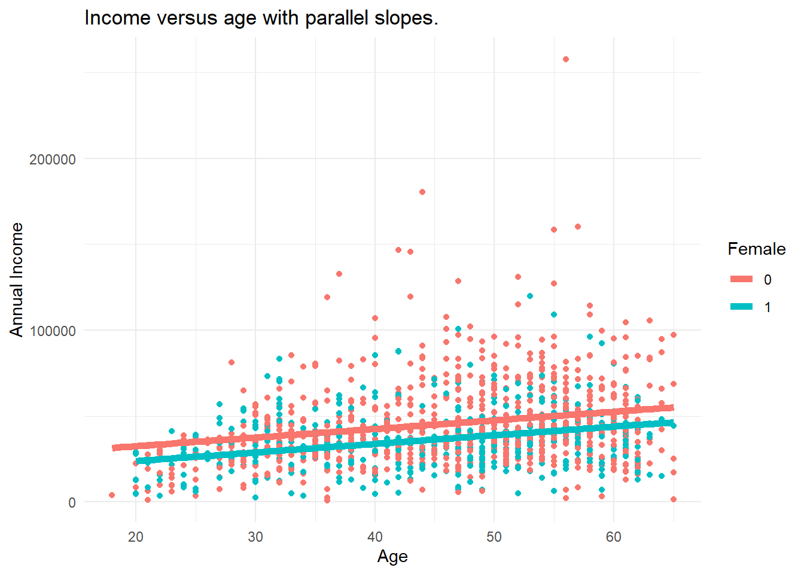
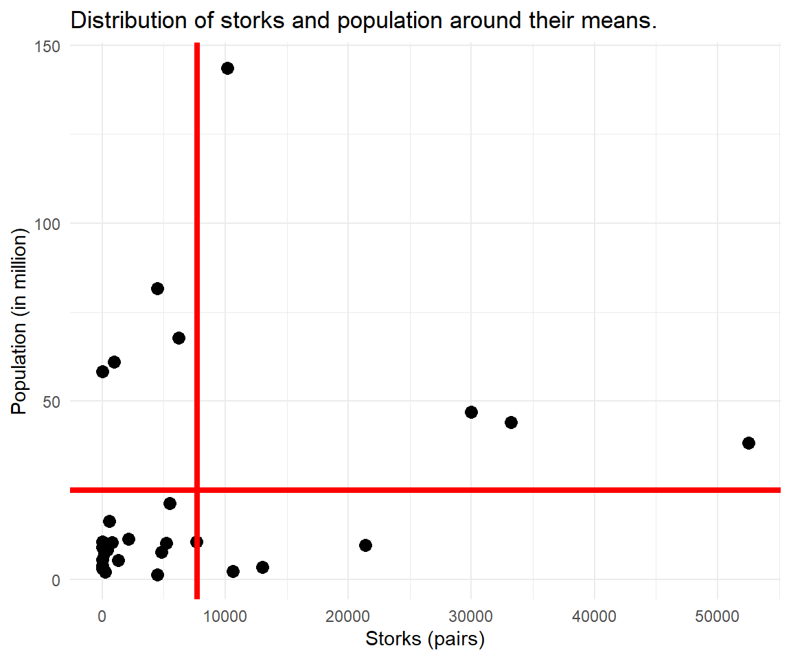

Chapter 2 Structured Data
Rows, units, and time
Some data arrives already rectangular: rows, columns, a value in every cell. The work then is not to build the table but to understand what a row means — one person, one person-year, one month, one country. A surprising share of the mistakes in applied research can be traced back to a misunderstanding on exactly that point.
This chapter walks the three shapes a rectangle can take. A cross-section holds many units at one moment. A panel holds many units at many moments. A time series holds one unit across many moments. They look alike on screen and demand entirely different analysis.
2.1 Tabular Data
Tabular data is the most common type of data. The ability to organize information systematically into rows and columns has been a cornerstone of data-driven decision-making for centuries. From handwritten ledgers to digital spreadsheets, tabular data has served as the foundation for understanding, managing, and extracting insights from a wide range of datasets.
Since tabular data is easy to understand and easy to handle, there are approaches to transform non-tabular data like text data into a tabular format. In the R realm this has been termed the tidy data principle. Each variable must have its own column. Each observation must have its own row. Each value must have its own cell.22
In this chapter, we embark on a journey through the world of tabular data, exploring its diverse facets and applications. We will delve into the art of manipulating, analyzing, and visualizing data in this familiar format, unlocking the potential it holds for uncovering hidden patterns and informing critical decisions. But our exploration goes further, as we introduce you to a special and dynamic subset of tabular data that adds an extra layer of complexity and depth to your analytical toolkit — panel data.
Definition
Tidy data principles are:
- Every column is a variable.
- Every row is an observation.
- Every cell is a single value.
2.1.1 Types of Tabular Data
How can there be different types of tabular data when a table always consists of rows and columns?
2.1.1.1 Cross-section
Look at the following example. This data is collected in 2026. Each row represents a different person (or unit), i.e. there are 6 women at different age and their respective income.
Cross-sectional data is a type of data collected by observing many subjects (such as individuals, firms, countries, or regions) at the one point or period of time. It can answer questions about levels: "How many people are poor in 2023 in Germany?" and questions about differences: "How are men and women affected by poverty?".
| Cross-sectional socio-economic data. | |||||
| Different units. Same time. | |||||
| Id | Year | Sex | Age of Individual | Number of Years of Education | Gross Income from Main Job/Year |
|---|---|---|---|---|---|
| 1 | 2026 | [1] female | 59 | 10.5 | 28678.94 |
| 2 | 2026 | [1] female | 60 | 10.5 | 19962.29 |
| 3 | 2026 | [1] female | 61 | 10.5 | 22227.68 |
| 4 | 2026 | [1] female | 62 | 10.5 | 22100.38 |
| 5 | 2026 | [1] female | 63 | 10.5 | 23157.92 |
| 6 | 2026 | [1] female | 74 | 10.0 | 0.00 |
2.1.1.2 Repeated cross-section
Cross-sectional survey data are data for a single point in time. Repeated cross-sectional data are created where a survey (or measurement) is administered to a new sample of interviewees at successive time points. For an annual survey, this means that respondents in one year will be different people to those in a prior year. Such data can either be analysed cross-sectionally, by looking at one survey year, or combined for analysis over time.
This type of data can answer questions about trends: "Has poverty increased or decreased?".
| Repeated cross-sectional data. | |||||
| Different units. Different time. | |||||
| Id | Year | Sex | Age of Individual | Number of Years of Education | Gross Income from Main Job/Year |
|---|---|---|---|---|---|
| 1 | 2025 | [1] female | 59 | 10.5 | 28678.94 |
| 2 | 2025 | [1] female | 60 | 10.5 | 19962.29 |
| 3 | 2025 | [1] female | 61 | 10.5 | 22227.68 |
| 4 | 2026 | [1] female | 62 | 10.5 | 22100.38 |
| 5 | 2026 | [1] female | 63 | 10.5 | 23157.92 |
| 6 | 2026 | [1] female | 74 | 10.0 | 0.00 |
2.1.1.3 Time series
Time series is data on a single subject at multiple points in time. Most commonly, data is collected at successive equally spaced points in time e.g. daily, annually. If data is collected annually, it's likely to be a survey study. If data is collected more frequently, e.g. daily, it's likely to be meteorology or finance. A time series is very frequently plotted via a run chart (which is a temporal line chart).
Time series data can answer questions about trends: "Is there a seasonal component in unemployment?".
| Time series data. | ||
| Same units. Different time. | ||
| Id | Time | Gross Income from Main Job/Year |
|---|---|---|
| 1 | 2023 Q1 | 28678.94 |
| 1 | 2023 Q2 | 19962.29 |
| 1 | 2023 Q3 | 22227.68 |
| 1 | 2023 Q4 | 22100.38 |
| 1 | 2024 Q1 | 23157.92 |
| 1 | 2024 Q2 | 0.00 |
2.1.1.4 Panel data
Panel data are observations for the same subjects over time. Subjects can be people, households, firms or countries. Panel data are a subset of longitudinal data. Key components are the panel identifier: person (id) and time (year). Every row is a person-year combination (so called long format).
With panel data we know the time-ordering of events. Panel data allow to identify causal effects under weaker assumptions (compared to cross-sectional data). Panel data can answer questions about change: "How many people went in and out of poverty?".
| Panel data. | |||||
| Different units. Different time. | |||||
| Id | Year | Sex | Age of Individual | Number of Years of Education | Gross Income from Main Job/Year |
|---|---|---|---|---|---|
| 1 | 2021 | [1] female | 59 | 10.5 | 28678.94 |
| 1 | 2022 | [1] female | 60 | 10.5 | 19962.29 |
| 1 | 2023 | [1] female | 61 | 10.5 | 22227.68 |
| 2 | 2021 | [1] female | 62 | 10.5 | 22100.38 |
| 2 | 2022 | [1] female | 63 | 10.5 | 23157.92 |
| 2 | 2023 | [1] female | 74 | 10.0 | 0.00 |
2.2 Panel Data
2.2.1 Unemployment
Unemployment occurs when someone is willing and able to work but does not have a paid job. Unemployment is measured by the unemployment rate. The unemployment rate is the most commonly used indicator for understanding conditions in the labour market.
The personal and social costs of unemployment include severe financial hardship and poverty, debt, homelessness and housing stress, family tensions and breakdown, boredom, alienation, shame and stigma, increased social isolation, crime, erosion of confidence and self-esteem, the atrophying of work skills and ill-health.
2.2.1.1 On decline in Germany

Figure 2.1: Unemployment rate in Germany
Reading
How Low Can Unemployment Really Go? Economists Have No Idea "Here are two things most economists can agree upon: They want an economy where everyone who seeks a job can get one. Yet for the economy to be dynamic, some people will always be unemployed, at least temporarily as they move between jobs."
Life after college.

Panel data allows to analyze the level of unemployment in Germany as well as the changes and trajectories of individuals. We can separate a frictional unemployment component and a permanent unemployment share. Frictional unemployment is a form of unemployment reflecting the gap between someone voluntarily leaving a job and finding another. As such, it is sometimes called search unemployment. Is search unemployment acceptable? Is it different from long-term unemployment? What do you think.
2.2.1.2 Measurement
The unemployment rate represents the proportion of the civilian labour force that is unemployed. Consequently, measuring the unemployment rate requires identifying who is in the labour force. The labour force consists of all employed and unemployed persons of working age. What exactly is defined as employment? Employment status can be defined via a threshold of working hours or income. Who is in the working age?
Reading
In Australia, the Australian Bureau of Statistics (ABS) conducts a survey each month – called the Labour Force Survey – in which it asks around 50,000 people. As part of this survey, the ABS groups people aged 15 years and over (the working-age population) into three broad categories:
- Employed – includes people who are in a paid job for one hour or more in a week.
- Unemployed – people who are not in a paid job, but who are actively looking for work.
- Not in the labour force – people not in a paid job, and who are not looking for work.
Read More: Unemployment: Its Measurement and Types
2.2.2 Application
2.2.2.1 Data Inspection
SOEP practice data (2015 - 2019) comes labeled and ready for analysis. SOEP provides a digital object identifier (DOI) for this data: https://doi.org/10.5684/soep.practice.v36.23
library(haven)
soep <- read_dta("https://github.com/MarcoKuehne/marcokuehne.github.io/blob/main/data/SOEP/practice_en/practice_dataset_eng.dta?raw=true")This practice data contains socio-economic information on children, education, job, health, satisfaction and income. It contains 15 variables and 23522 observations.
| Unique | Missing Pct. | Mean | SD | Min | Median | Max | Histogram | |
|---|---|---|---|---|---|---|---|---|
| syear | 5 | 0 | 2016.8 | 1.4 | 2015.0 | 2017.0 | 2019.0 | ![](data:image/png;base64, iVBORw0KGgoAAAANSUhEUgAABLAAAAGQCAMAAACJa2lsAAAABlBMVEUAAAD///+l2Z/dAAAP40lEQVR4nO3UMQ5k2w1DwfH+N+3sRjTgIfDVj3bVCqQT8M+/AEb8+fUBAP8tgwXMMFjADIMFzDBYwAyDBcwwWMAMgwXMMFjADIMFzDBYwAyDBcwwWMCMvxqsP6V/6njg/4vBAmYYLGCGwQJmGCxghsECZhgsYIbBAmYYLGCGwQJmGCxghsECZhgsYIbBAmYYLGCGwQJmGCxghsECZhgsYIbBAmYYLGCGwQJmGCxghsECZhgsYIbBAmYYLGCGwQJmGCxghsECZhgsYIbBAmYYLGCGwQJmGCxghsECZhgsYIbBetrvRt6D/wEG6zFY8HUG6zFY8HUG6zFY8HUG6zFY8HUG6zFY8HUG6zFY8HUG6zFY8HUG6zFY8HUG6zFY8HUG6zFY8HUG6zFY8HUG6zFY8HUG6zFY8HUG6zFY8HUG6zFY8HUG6zFY8HUG6zFYiSh8icF62u9G3iuJwpcYrKf9buS9kih8icF62u9G3iuJwpcYrKf9buS9kih8icF62u9G3iuJwpcYrKf9buS9kih8icF62u9G3iuJwpcYrKf9buS9kih8icF62u9G3iuJwpcYrKf9buS9kih8icF62u9G3iuJwpcYrKf9buS9kih8icF62u9G3iuJwpcYrKf9buS9kih8icF62u9G3iuJwpcYrKf9buS9kih8icF62u9G3iuJwpcYrKf9buS9kih8icF62u9G3iuJwpcYrKf9buS9kih8icF62u9G3iuJwpcYrKf9buS9kih8icF62u9G3iuJwpcYrKf9buS9kih8icF62u9G3iuJkqjyKwbrab8bea8kSqLKrxisp/1u5L2SKIkqv2Kwnva7kfdKoiSq/IrBetrvRt4riZKo8isG62m/G3mvJEqiyq8YrKf9buS9kiiJKr9isJ72u5H3SqIkqvyKwXra70beK4mSqPIrButpvxt5ryRKosqvGKyn/W7kvZIoiSq/YrCe9ruR90qiJKr8isF62u9G3iuJkqjyKwbrab8bea8kSqLKrxisp/1u5L2SKIkqv2Kwnva7kfdKoiSq/IrBetrvRt4riZKo8isG62m/G3mvJEqiyq8YrKf9buS9kiiJKr9isJ72u5H3SqIkqvyKwXra70beK4mSqPIrButpvxt5ryRKosqvGKyn/W7kvZIoiSq/YrCe9ruR90qiJKr8isF62u9G3iuJkqjyKwbrab8bea8kSqLKrxisp/1u5L2SKIkqv2Kwnva7kfdKoiSq/IrBetrvRt4riZKoErRR/m6DLi76u79/5aT3HFESVYI2isHqnPSeI0qiStBGMVidk95zRElUCdooBqtz0nuOKIkqQRvFYHVOes8RJVElaKMYrM5J7zmiJKoEbRSD1TnpPUeURJWgjWKwOie954iSqBK0UQxW56T3HFESVYI2isHqnPSeI0qiStBGMVidk95zRElUCdooBqtz0nuOKIkqQRvFYHVOes8RJVElaKMYrM5J7zmiJKoEbRSD1TnpPUeURJWgjWKwOie954iSqBK0UQxW56T3HFESVYI2isHqnPSeI0qiStBGMVidk95zRElUCdooBqtz0nuOKIkqQRvFYHVOes8RJVElaKMYrM5J7zmiJKoEbRSD1TnpPUeURJWgjWKwOie954iSqBK0UQxW56T3HFESVYI2isHqnPSeI0qiStBGMVidk95zRElUCdooBqtz0nuOKIkqQRvFYHVOes8RJVElaKMYrM5J7zmiJKoEbRSD1TnpPUeURJWgjWKwOie954iSqBK0UQxW56T3HFESVYI2isHqnPSeI0qiStBGMVidk95zRElUCdooBqtz0nuOKIkqQRvFYHVOes8RJVElaKMYrM5J7zmiJKoEbRSD1TnpPUeURJWgjWKwOie954iSqBK0UQxW56T3HFESVYI2isHqnPSeI0qiStBGMVidk95zRElUCdooBqtz0nuOKIkqQRvFYHVOes8RJVElaKMYrM5J7zmiJKoEbRSD1TnpPUeURJWgjWKwOie954iSqBK0UQxW56T3HFESVYI2isHqnPSeI0qiStBGMVidk95zRElUCdooBqtz0nuOKIkqQRvFYHVOes8RJVElaKMYrM5J7zmiJKoEbRSD1TnpPUeURJWgjWKwOie954iSqBK0UQxW56T3HFESVYI2isHqnPSeI0qiStBGMVidk95zRElUCdooBqtz0nuOKIkqQRvFYHVOes8RJVElaKMYrM5J7zmiJKoEbRSD1TnpPUeURJWgjWKwOie954iSqBK0UQxW56T3HFESVYI2isHqnPSeI0qiStBGMVidk95zRElUCdooBqtz0nuOKIkqQRvFYHVOes8RJVElaKMYrM5J7zmiJKoEbRSD1TnpPUeURJWgjWKwOie954iSqBK0UQxW56T3HFESVYI2isHqnPSeI0qiStBGMVidk95zRElUCdooBqtz0nuOKIkqQRvFYHVOes8RJVElaKMYrM5J7zmiJKoEbRSD1TnpPUeURJWgjWKwOie954iSqBK0UQxW56T3HFESVYI2isHqnPSeI0qiStBGMVidk95zRElUCdooBqtz0nuOKIkqQRvFYHVOes8RJVElaKMYrM5J7zmiJKoEbRSD1TnpPUeURJWgjWKwOie954iSqBK0UQxW56T3HFESVYI2isHqnPSeI0qiStBGMVidk95zRElUCdooBqtz0nuOKIkqQRvFYHVOes8RJVElaKMYrM5J7zmiJKoEbRSD1TnpPUeURJWgjWKwOie954iSqBK0UQxW56T3HFESVYI2isHqnPSeI0qiStBGMVidk95zRElUCdooBqtz0nuOKIkqQRvFYHVOes8RJVElaKMYrM5J7zmiJKoEbRSD1TnpPUeURJWgjWKwOie954iSqBK0UQxW56T3HFESVYI2isHqnPSeI0qiStBGMVidk95zRElUCdooBqtz0nuOKIkqQRvFYHVOes8RJVElaKMYrM5J7zmiJKoEbRSD1TnpPUeURJWgjWKwOie954iSqBK0UQxW56T3HFESVYI2isHqnPSeI0qiStBGMVidk95zRElUCdooBqtz0nuOKIkqQRvFYHVOes8RJVElaKMYrM5J7zmiJKoEbRSD1TnpPUeURJWgjWKwOie954iSqBK0UQxW56T3HFESVYI2isHqnPSeI0qiStBGMVidk95zRElUCdooBqtz0nuOKIkqQRvFYHVOes8RJVElaKMYrM5J7zmiJKoEbRSD1TnpPUeURJWgjWKwOie954iSqBK0UQxW56T3HFESVYI2isHqnPSeI0qiStBGMVidk95zRElUCdooBqtz0nuOKIkqQRvFYHVOes8RJVElaKMYrM5J7zmiJKoEbRSD1TnpPUeURJWgjWKwOie954iSqBK0UQxW56T3HFESVYI2isHqnPSeI0qiStBGMVidk95zRElUCdooBqtz0nuOKIkqQRvFYHVOes8RJVElaKMYrM5J7zmiJKoEbRSD1TnpPUeURJWgjWKwOie954iSqBK0UQxW56T3HFESVYI2isHqnPSeI0qiStBGMVidk95zRElUCdooBqtz0nuOKIkqQRvFYHVOes8RJVElaKMYrM5J7zmiJKoEbRSD1TnpPUeURJWgjWKwOie954iSqBK0UQxW56T3HFESVYI2isHqnPSeI0qiStBGMVidk95zRElUCdooBqtz0nuOKIkqQRvFYHVOes8RJVElaKMYrM5J7zmiJKoEbRSD1TnpPUeURJWgjWKwOie954iSqBK0UQxW56T3HFESVYI2isHqnPSeI0qiStBGMVidk95zRElUCdooBqtz0nuOKIkqQRvFYHVOes8RJVElaKMYrM5J7zmiJKoEbRSD1TnpPUeURJWgjWKwOie954iSqBK0UQxW56T3HFESVYI2isHqnPSeI0qiStBGMVidk95zRElUCdooBqtz0nuOKIkqQRvFYHVOes8RJVElaKMYrM5J7zmiJKoEbRSD1TnpPUeURJWgjWKwOie954iSqBK0UQxW56T3HFESVYI2isHqnPSeI0qiStBGMVidk95zRElUCdooBqtz0nuOKIkqQRvFYHVOes8RJVElaKMYrM5J7zmiJKoEbRSD1TnpPUeURJWgjWKwOie954iSqBK0UQxW56T3HFESVYI2isHqnPSeI0qiStBGMVidk95zRElUCdooBqtz0nuOKIkqQRvFYHVOes8RJVElaKMYrM5J7zmiJKoEbRSD1TnpPUeURJWgjWKwOie954iSqBK0UQxW56T3HFESVYI2isHqnPSeI0qiStBGMVidk95zRElUCdooBqtz0nuOKIkqQRvFYHVOes8RJVElaKMYrM5J7zmiJKoEbRSD1TnpPUeURJWgjWKwOie954iSqBK0UQxW56T3HFESVYI2isHqnPSeI0qiStBGMVidk95zRElUCdooBqtz0nuOKIkqQRvFYHVOes8RJVElaKMYrM5J7zmiJKoEbRSD1TnpPUeURJWgjWKwOie954iSqBK0UQxW56T3HFESVYI2isHqnPSeI0qiStBGMVidk95zRElUCdooBqtz0nuOKIkqQRvFYHVOes8RJVElaKMYrM5J7zmiJKoEbRSD1TnpPUeURJWgjWKwOie954iSqBK0UQxW56T3HFESVYI2isHqnPSeI0qiStBGMVidk95zRElUCdooBqtz0nuOKIkqQRvFYHVOes8RJVElaKMYrM5J7zmiJKoEbRSD1TnpPUeURJWgjWKwOie954iSqBK0UQxW56T3HFESVYI2isHqnPSeI0qiStBGMVidk95zRElUCdooBqtz0nuOKIkqQRvFYHVOes8RJVElaKMYrM5J7zmiJKoEbRSD1TnpPUeURJWgjWKwOie954iSqBK0UQxW56T3HFESVYI2isHqnPSeI0qiStBGMVidk95zRElUCdooBqtz0nuOKIkqQRvFYHVOes8RJVElaKMYrM5J7zmiJKoEbRSD1TnpPUeURJWgjWKwOie954iSqBK0UQxW56T3HFESVYI2isHqnPSeI0qiStBGMVidk95zRElUCdooBqtz0nuOKIkqQRvFYHVOes8RJVElaKMYrM5J7zmiJKoEbRSD1TnpPUeURJWgjWKwOie954iSqBK0UQxW56T3HFESVYI2isHqnPSeI0qiStBGMVidk95zRElUCdooBqtz0nuOKIkqQRvFYHVOes8RJVElaKMYrM5J7zmiJKoEbRSD1TnpPUeURJWgjWKwOie954iSqBK0UQxW56T3HFESVYI2isHqnPSeI0qiStBGMVidk95zRElUCdooBqtz0nuOKIkqQRvFYHVOes8RJVElaKMYrM5J7zmiJKoEbRSD1TnpPUeURJWgjfK9wQL4T/6xwQL4JYMFzDBYwAyDBcwwWMAMgwXMMFjADIMFzDBYwAyDBcwwWMAMgwXMMFjADIMFzPg3vZfzbkfRduIAAAAASUVORK5CYII=) |
| sex | 2 | 0 | 0.5 | 0.5 | 0.0 | 1.0 | 1.0 | ![](data:image/png;base64, iVBORw0KGgoAAAANSUhEUgAABLAAAAGQCAMAAACJa2lsAAAABlBMVEUAAAD///+l2Z/dAAAFQElEQVR4nO3UwRFAQAAEwZN/0iJQhXIYuhPYfc1YACLG0wcA9hIsIEOwgAzBAjIEC8gQLCBDsIAMwQIyBAvIECwgQ7CADMECMgQLyBAs4ArjrEMjs94DvyJYQIZgARmCBWQIFpAhWECGYAEZggVkCBaQIVhAhmABGYIFZAgWkCFYQIZgARmCBWQIFpAhWECGYAEZggVkCBaQIVhAhmABGYIFZAgWkCFYQIZgARmCBWQIFpAhWECGYAEZggVkCBaQIVhAhmABGYIFZAgWkCFYQIZgARmCBWQIFpAhWECGYAEZggVkCBaQIVhAhmABGYIFZAgWkCFYQIZgARmCBWQIFpAhWECGYAEZggVkCBaQ8b5g3XEISBIsIEOwgAzBAjIEC8gQLCBDsIAMwQIyBAvIECwgQ7CADMECMgQLyBAsIEOwgAzBAjIEC8gQLCBDsIAMwQIyBAvIECwgQ7CADMECMgQLyBAsIEOwgAzBAjIEC8gQLCBDsIAMwQIyBAvIECwgQ7CADMECMgQLyBAsIEOwgAzBAjIEC8gQLCBDsIAMwQIyBAvIECwgQ7CADMECMgQLyBAsIEOwgAzBAjIEC8gQLCBDsIAMwQIyBAvIECwgQ7CADMECMgQLyBAsIEOwgAzBAjIEC8gQLCBDsIAMwQIyBAvIECwgQ7CADMECMgQLyBAsIEOwgAzBAjIEC8gQLCBDsIAMwQIyBAvIECwgQ7CADMECMgQLyBAsIEOwgAzBAjIEC8gQLCBDsIAMwQIyBAvIECwgQ7CADMECMgQLyBAsIEOwgAzBAjIEC8gQLCBDsIAMwQIyBAvIECwgQ7CADMECMgQLyBAsIEOwgAzBAjIEC8gQLCBDsIAMwQIyBAvIECwgQ7CADMECMgQLyBAsIEOwgAzBAjIEC8gQLCBDsIAMwQIyBAvIECwgQ7CADMECMgQLyBAsIEOwgAzBAjIEC8gQLCBDsIAMwQIyBAvIECwgQ7CADMECMgQLyBAsIEOwgAzBAjIEC8gQLCBDsIAMwQIyBAvIECwgQ7CADMECMgQLyBAsIEOwgAzBAjIEC8gQLCBDsIAMwQIyBAvIECwgQ7CADMECMgQLyBAsIEOwgAzBAjIEC8gQLCBDsIAMwQIyBAvIECwgQ7CADMECMgQLyBAsIEOwgAzBAjIEC8gQLCBDsIAMwQIyBAvIECwgQ7CADMECMgQLyBAsIEOwgAzBAjIEC8gQLCBDsIAMwQIyBAvIECwgQ7CADMECMgQLyBAsIEOwgAzBAjIEC8gQLCBDsIAMwQIyBAvIECwgQ7CADMECMgQLyBAsIEOwgAzBAjIEC8gQLCBDsIAMwQIyBAvIECwgQ7CADMECMgQLyBAsIEOwgAzBAjIEC8gQLCBDsIAMwQIyBAvIECwgQ7CADMECMgQLyBAsIEOwgAzBAjIEC8gQLCBDsIAMwQIyBAvIECwgQ7CADMECMgQLyBAsIEOwgAzBAjIEC8gQLCBDsIAMwQIyBAvIECwgQ7CADMECMgQLyBAsIEOwgAzBAjIEC8gQLCBDsIAMwQIyBAvIECwgQ7CADMECMgQLyBAsIEOwgAzBAjIEC8gQLCBDsIAMwQIyBAvIECwgQ7CADMECMgQLyBAsIEOwgAzBAjIEC8gQLCBDsIAMwQIyBAvIECwgQ7CADMECMgQLyBAsIEOwgAzBAjIEC8gQLCBDsIAMwQIyBAvIECwgQ7CADMECMgQLyPhOsAC2TAsWwJMEC8gQLCBDsIAMwQIyBAvIECwgQ7CADMECMgQLyBAsIEOwgAzBAjIEC8hYATqMt/Bbh8KRAAAAAElFTkSuQmCC) |
| alter | 86 | 0 | 48.3 | 18.3 | 17.0 | 48.0 | 102.0 | ![](data:image/png;base64, iVBORw0KGgoAAAANSUhEUgAABLAAAAGQCAMAAACJa2lsAAAABlBMVEUAAAD///+l2Z/dAAALMElEQVR4nO3UQRLsNpJEQc39Lz0bLOob2owtCtGRhNzXtSgDM95f/wfwEX+1/wDAf0uwgM8QLOAzBAv4DMECPkOwgM8QLOAzBAv4DMECPkOwgM8QLOAzBAv4DMECPkOwRvvrn2n/fTjMTY8mWPDLTY8mWPDLTY8mWPDLTY8mWPDLTY8mWPDLTY/2D4Mld1zGVY4mWPDLVY4mWPDLVY4mWPDLVY4mWPDLVY4mWPDLVY4mWPDLVY4mWPDLVY4mWPDLVY4mWPDLVY4mWPDLVY4mWPDLVY4mWPDLVY4mWPDLVY4mWPDLVY4mWPDLVY4mWPDLVY4mWPDLVY4mWPDLVY4mWPDLVY4mWPDLVY4mWPDLVY4mWPDLVaZVm/OPtF8ONq4yrZ2d99ovBxtXmdbOznvtl4ONq0xrZ+e99svBxlWmtbPzXvvlYOMq09rZea/9crBxlWnt7LzXfjnYuMq0dnbea78cbFxlWjs777VfDjauMq2dnffaLwcbV5nWzs577ZeDjatMa2fnvfbLwcZVprWz81775WDjKtPa2Xmv/XKwcZVp7ey813452LjKtHZ23mu/HGxcZVo7O++1Xw42rjKtnZ332i8HG1eZ1s7Oe+2Xg42rTGtn5732y8HGVaa1s/Ne++Vg4yrT2tl5r/1ysHGVae3svNd+Odi4yrR2dt5rvxxsXGVaOzvvtV8ONq4yrZ2d99ovBxtXmdbOznvtl4ONq0xrZ+e99svBxlWmtbPzXvvlYOMq09rZea/9crBxlWnt7LzXfjnYuMq0dnbea78cbFxlWjs777VfDjauMq2dnffaLwcbV5nWzs577ZeDjat81g5HS/vdYeMqn7XD0dJ+d9i4ymftcLS03x02rvJZOxwt7XeHjat81g5HS/vdYeMqn7XD0dJ+d9i4ymftcLS03x02rvJZOxwt7XeHjat81g5HS/vdYeMqn7XD0dJ+d9i4ymftcLS03x02rvJZOxwt7XeHjat81g5HS/vdYeMqn7XD0dJ+d9i4ymftcLS03x02rvJZOxwt7XeHjat81g5HS/vdYeMqn7XD0dJ+d9i4ymftcLS03x02rvJZOxwt7XeHjat81g5HS/vdYeMqn7XD0dJ+d9i4ymftcLS03x02rvJZOxwt7XeHjat81g5HS/vdYeMqn7XD0dJ+d9i4ymftcLS03x02rvJZOxwt7XeHjat81g5HS/vdYeMqn7XD0dJ+d9i4ymftcLS03x02rvJZOxwt7XeHjat81g7HJ7U/GndyWM/a2/+k9kfjTg7rWXv7n9T+aNzJYT1rb/+T2h+NO/2tw/qX3vCRAf/btD8ad/p3BOvIBPk7eh+bmwkWEb2Pzc0Ei4jex+ZmgkVE72NzM8EiovexuZlgEdH72NxMsIjofWxuJlhE9D42NxMsInofm5sJFhG9j83NBIuI3sfmZoJFRO9jczPBIqL3sbmZYBHR+9jcTLCI6H1sbiZYRPQ+NjcTLCJ6H5ubCRYRvY/NzQSLiN7H5maCRUTvY3MzwSKi97G5mWAR0fvY3EywiOh9bG4mWET0PjY3Eywieh+bmwkWEb2Pzc0Ei4jex+ZmgkVE72NzM8EiovexuZlgEdH72NxMsIjofWxuJlhE9D42NxMsBuqdCrMJFgP1ToXZBIuBeqfCbILFQL1TYTbBYqDeqTCbYDFQ71SYTbAYqHcqzCZYDNQ7FWYTLAbqnQqzCRYD9U6F2QSLgXqnwmyCxUC9U2E2wWKg3qkwm2AxUO9UmE2wGKh3KswmWAzUOxVmEywG6p0KswkWA/VOhdkEi4F6p8JsgsV1eodG2v8yWL0jbP5x/uf+0a0w2meCBf+t1FjoEyyukxoLfYLFdVJjoU+wuE5qLPQJFtdJjYU+weI6qbHQJ1hcJzUW+gSL66TGQp9gcZ3UWOgTLK6TGgt9gsV1UmOhT7C4Tmos9AkW10mNhT7B4jqpsdAnWFwnNRb6BIvrpMZCn2BxndRY6BMsrpMaC32CxXVSY6FPsLhOaiz0CRbXSY2FPsHiOqmx0CdYXCc1FvoEC/6QmhonCBb8ITU1ThAs+ENqapwgWPCH1NQ4QbDgD6mpcYJgwR9SU+MEwYI/pKbGCYIFf0hNjRMEC/6QmhonCBb8ITU1ThAsOCe1UxbBgnNSO2URLDgntVMWwYJzUjtlESw4J7VTFsGCc1I7ZREsOCe1UxbBgnNSO2URLDgntVMWwYJzUjtlESw4J7VTFsGCc1I7ZREsOCe1UxbBgnNSO2URLDgntVMWwYJzUjtlESw4J7VTFsGCc1I7ZREsOCe1UxbBgnNSO2URLDgntVMWwYJzUjtlESw4J7VTFsGCc1I7ZREsOCe1UxbBgnNSO2URLDgntVMWwYJzUjtlESw4J7VTFsGCc1I7ZREsOCe1UxbBgnNSO2URLDgntVMWwYJzUjtlESw4J7VTFsGCc1I7ZREsOCe1UxbBgnNSO2URLDgntVMWwYJzUjtlESw4J7VTFsGCc1I7ZREsOCe1UxbBgnNSO2URLDgntVMWwYJzUjtlESw4J7VTFsGCc1I7ZREsOCe1UxbBgnNSO2URLDgntVMWwYJzUjtlESw4J7VTFsGCc1I7ZREsOCe1UxbBgnNSO2URLDgntVMWwYJzUjtlESw4J7VTFsGCc1I7ZREsOCe1UxbBgnNSO2URLDgntVMWwYJzUjtlESw4J7VTFsGCc1I7ZREsOCe1UxbBgnNSO2URLDgntVMWwYJzUjtlESw4J7VTFsGCc1I7ZREsOCe1UxbBgnNSO2URLDgntVMWwYJzUjtlESw4J7VTFsGCc1I7ZREsOCe1UxbBgnNSO2URLDgntVMWwYJzUjtlESw4J7VTFsGCc1I7ZREsOCe1UxbBgnNSO2URLDgntVMWwYJzUjtlESw4J7VTFsGCc1I7ZREsOCe1UxbBgnNSO2URLDgntVMWwYJzUjtlESw4J7VTFsGCc1I7ZREsOCe1UxbBgnNSO2URLDgntVMWwYJzUjtlESw4J7VTFsGCKVIrv4hgwRSplV9EsGCK1MovIlgwRWrlFxEsmCK18osIFkyRWvlFBAumSK38IoIFU6RWfhHBgilSK7+IYMEUqZVfRLBgitTKLyJYMEVq5RcRLJgitfKLCBZMkVr5RQQLpkit/CKCBVOkVn4RwYIpUiu/iGDBFKmVX0SwYIrUyi8iWDBFauUXESyYIrXyiwgWTJFa+UUEC6ZIrfwiggVTpFZ+EcGCKVIrv4hgwRSplV9EsGCK1MovIlgwRWrlFxEsmCK18osIFkyRWvlFBAumSK38IoIFU6RWfhHBgilSK7+IYMEUqZVfRLBgitTKLyJYMEVq5RcRLJgitfKLCBZMkVr5RQQLpkit/CKCBVOkVn4RwYIpUiu/iGDBFKmVX0SwYIrUyi8iWDBFauUXESyYIrXyiwgWTJFa+UUEC6ZIrfwiggVTpFZ+EcGCKVIrv4hgwR1SjRhFsOAOqUaMIlhwh1QjRhEsuEOqEaMIFtwh1YhRBAvukGrEKIIFd0g1YhTBgjukGjGKYMEdUo0YRbDgDqlGjCJYcIdUI0YRLLhDqhGjCBbcIdWIUQQL7pBqxCiCBXdINWIUwYI7pBoximDBHVKNGEWw4A6pRowiWHCHVCNGESy4Q6oRowgW3CHViFEEC+6QasQoggV3SDViFMECPpM7wQIEC/iQVGEOEyxAsIAPSRXmMMECBAv4kFRhDhMsQLCAf4tUnv5Dg/7WjwE2qTz9hwb9rR8DHCZYwGfEggXQJFjAZwgW8BmCBXyGYAGfIVjAZwgW8BmCBXyGYAGfIVjAZwgW8BmCBXyGYAGfIVjAZ/w/xe/okdoyUBUAAAAASUVORK5CYII=) |
| anz_pers | 13 | 0 | 2.9 | 1.5 | 1.0 | 2.0 | 13.0 | ![](data:image/png;base64, iVBORw0KGgoAAAANSUhEUgAABLAAAAGQCAMAAACJa2lsAAAABlBMVEUAAAD///+l2Z/dAAAHAElEQVR4nO3UwREstxUEQcp/p3Vd4SQG1PooTqYFmOg39de/ACL++tMPAPhvCRaQIVhAhmABGYIFZAgWkCFYQIZgARmCBWQIFpAhWECGYAEZggVk/K1g/TW1+kTgn0KwgAzBAjIEC8gQLCBDsIAMwQIyBAvIECwgQ7CADMECMgQLyBAsIEOwgAzBAjIEC8gQLCBDsIAMwQIyBAvIECwgQ7CADMECMgQLyBAsIEOwgAzBAjIEC8gQLCBDsIAMwQIyBAvIECwgQ7CADMECMgQLyBAsIEOwgAzBAjIEC8gQLCBDsIAMwQIyBAvIECwgQ7CADMECMgQLyBAsIEOwgAzBAjIEC8gQLCBDsIAMwQIyBAvIECwgQ7CADMECMgQLyBAsIEOwgAzBAjIEC8gQLCBDsIAMwQIyBAvIECwgQ7CADMECMgQLyBAsIEOwgAzBAjIEC8gQLCBDsIAMwQIyBAvIECwgQ7CADMECMgQLyBAsIEOwgAzBAjIEC8gQLCBDsIAMwQIyBAvIECwgQ7CADMECMgQLyBAsIEOwgAzBAjIEC8gQLCBDsIAMwQIyBAvIECwgQ7CADMECMgQLyBAsIEOwgAzBAjIEC8gQLCBDsIAMwQIyBAvIECwgQ7CADMECMgQLyBAsIEOwgAzBAjIEC8gQLCBDsIAMwQIyBAvIECwgQ7CADMECMgQLyBAsIEOwgAzBAjIEC8gQLCBDsIAMwQIyBAvIECwgQ7CADMECMgQLyBAsIEOwgAzBAjIEC8gQLCBDsIAMwQIyBAvIECwgQ7CADMECMgQLyBAsIEOwgAzBAjIEC8gQLCBDsIAMwQIyBAvIECwgQ7CADMECMgQLyBAsIEOwgAzBAjIEC8gQLCBDsIAMwQIyBAvIECwgQ7CADMECMgQLyBAsIEOwgAzBAjIEC8gQLCBDsIAMwQIyBAvIECwgQ7CADMECMgQLyBAsIEOwgAzBAjIEC8gQLCBDsIAMwQIyBAvIECwgQ7CADMECMgQLyBAsIEOwgAzBAjIEC8gQLCBDsIAMwQIyBAvIECwgQ7CADMECMgQLyBAsIEOwgAzBAjIEC8gQLCBDsIAMwQIyBAvIECwgQ7CADMECMgQLyBAsIEOwgAzBAjIEC8gQLCBDsIAMwQIyvhGs7MOBX4L19MOBX4L19MOBX4L19MOBX4L19MOBX4L19MOBX4L19MOBX4L19MOBX4L19MOBX4L19MOBX4L19MOBXw8FK2u1DXAQrHurbYCDYN1bbQMcBOveahvgIFj3VtsAB8G6t9oGOAjWvdU2wEGw7q22AQ6CdW+1DXAQrHurbYCDYN1bbQMcBOveahvgIFj3VtsAB8G6t9oGOAjWvdU2wEGw7q22AQ6CdW+1DXAQrHurbYCDYN1bbQMcBOveahvgIFj3VtsAB8G6t9oGOAjWvdU2wEGw7q22AQ6CdW+1DXAQrHurbYCDYN1bbQMcBOveahvgIFj3VtsAB8G6t9oGOAjWvdU2wEGw7q22AQ6CdW+1DXAQrHurbYCDYN1bbQMcBOveahvgIFj3VtsAB8G6t9oGOAjWvdU2wEGw7q22AQ6CdW+1DXAQrHurbYCDYN1bbQMcBOveahvgIFj3VtsAB8G6t9oGOAjWvdU2wEGw7q22AQ6CdW+1DXAQrHurbYCDYN1bbQMcBOveahvgIFj3VtsAB8G6t9oGOAjWvdU2wEGw7q22AQ6CdW+1DXAQrLetdockwXrbandIEqy3rXaHJMF622p3SBKst612hyTBettqd0gSrLetdockwXrbandIEqy3rXaHJMF622p3SBKst612hyTBettqd0gSrLetdockwXrbandIEqy3rXaHJMF622p3SBKst612hyTBettqd0gSrLetdockwXrbandIEqy3rXaHJMF622p3SBKst612hyTBettqd0gSrLetdockwXrbandIEqy3rXaHJMF622p3SBKst612hyTBettqd0gSrLetdockwXrbandIEqy3rXaHJMF622p3SBKst612hyTBettqd0gSrLetdockwXrbandIEqy3rXaHJMF622p3SBKst612hyTBettqd0gSrLetdockwXrbandIEqy3rXaHJMF622p3SBKsD1sdFawI1oetjgpWBOvDVkcFK4L1YaujghXB+rDVUcGKYH3Y6qhgRbA+bHVUsCJYH7Y6KlgRrA9bHRWsCNaHrY4KVgTrw1ZHBSuC9WGro4IVwfqw1VHBimB92OqoYEWwPmx1VLAiWEysDpZvEywmVgfLtwkWE6uD5dsEi4nVwfJtggX/YfWr8b8gWPB/s/qNv0Ow4J9h1YinCBbwR82CBfAnCRaQIVhAhmABGYIFZAgWkCFYQIZgARmCBWQIFpAhWECGYAEZggVkCBaQ8W+8gEI1fImbbQAAAABJRU5ErkJggg==) |
| anz_kind | 12 | 0 | 0.7 | 1.1 | 0.0 | 0.0 | 10.0 | ![](data:image/png;base64, iVBORw0KGgoAAAANSUhEUgAABLAAAAGQCAMAAACJa2lsAAAABlBMVEUAAAD///+l2Z/dAAAF/klEQVR4nO3UwXEQQBADQZN/0mRAgReEx9edgPSajx8AER//+wDA7xIsIEOwgAzBAjIEC8gQLCBDsIAMwQIyBAvIECwgQ7CADMECMgQLyPijYH180r86D7xFsIAMwQIyBAvIECwgQ7CADMECMgQLyBAsIEOwgAzBAjIEC8gQLCBDsIAMwQIyBAvIECwgQ7CADMECMgQLyBAsIEOwgAzBAjIEC8gQLCBDsIAMwQIyBAvIECwgQ7CADMECMgQLyBAsIEOwgAzBAjIEC8gQLCBDsIAMwQIyBAvIECwgQ7CADMECMgQLyBAsIEOwgAzBAjIEC8gQLCBDsIAMwQIyBAvIECwgQ7CADMECMgQLyBAsIEOwgAzBAjIEC8gQLCBDsIAMwQIyBAvIECwgQ7CADMECMgQLyBAsIEOwgAzBAjIEC8gQLCBDsIAMwQIyBAvIECwgQ7CADMECMgQLyBAsIEOwgAzBAjIEC8gQLCBDsIAMwQIyBAvIECwgQ7CADMECMgQLyBAsIEOwgAzBAjIEC8gQLCBDsIAMwQIyBAvIECwgQ7CADMECMgQLyBAsIEOwgAzBAjIEC8gQLCBDsIAMwQIyBAvIECwgQ7CADMECMgQLyBAsIEOwgAzBAjIEC8gQLCBDsIAMwQIyBAvIECwgQ7CADMECMgQLyBAsIEOwgAzBAjIEC8gQLCBDsIAMwQIyBAvIECwgQ7CADMECMgQLyBAsIEOwgAzBAjIEC8gQLCBDsIAMwQIyBAvIECwgQ7CADMECMgQLyBAsIEOwgAzBAjIEC8gQLCBDsIAMwQIyBAvIECwgQ7CADMECMgQLyBAsIEOwgAzBAjIEC8gQLCBDsIAMwQIyBAvIECwgQ7CADMECMgQLyBAsIEOwgAzBAjIEC8gQLCBDsIAMwQIyBAvIECwgQ7CADMECMgQLyBAsIEOwgAzBAjIEC8gQLCBDsIAMwQIyBAvIECwgQ7CADMECMgQLyBAsIEOwgAzBAjIEC8gQLCBDsIAMwQIyBAvIECwgQ7CADMECMgQLyBAsIEOwgAzBAjIEC8gQLCBDsIAMwQIyBAvIECwgQ7CADMECMgQLyBAsIEOwgAzBAjIEC8gQLCBDsIAMwQIyBAvIECwgQ7CADMECMgQLyBAsIEOwgAzBAjIEC8gQLCBDsIAMwQIyBAvIECwgQ7CADMECMgQLyBAsIEOwgAzBAjIEC8gQLCBDsIAMwQIyBAvIECwgQ7CADMECMgQLyBAsIEOwgAzBAjIEC8gQLCBDsIAMwQIyBAvIECwgYxIsoQP+BsECMgQLyBAsIEOwgAzBAjIEC8gQLCDjOwZrPAesCNZ5DlgRrPMcsCJY5zlgRbDOc8CKYJ3ngBXBOs8BK4J1ngNWBOs8B6wI1nkOWBGs8xywIljnOWBFsM5zwIpgneeAFcE6zwErgnWeA1YE6zwHrAjWeQ5YEazzHLAiWOc5YEWwznPAimCd54AVwTrPASuCdZ4DVgTrPAesCNZ5DlgRrPMcsCJY5zlgRbDOc8CKYJ3ngBXBOs8BK4J1ngNWBOs8B6wI1nkOWBGs8xywIljnOWBFsM5zwIpgneeAFcE6zwErgnWeA1YE6zwHrAjWeQ5YEazzHLAiWOc5YEWwznPAimCd54AVwTrPASuCdZ4DVgTrPAesCNZ5DlgRrPMcsCJY5zlgRbDOc8CKYJ3ngBXBOs8BK4J1ngNWBOs8B6wI1nkOWBGs2hw8TLBqc/AwwarNwcMEqzYHDxOs2hw8TLBqc/AwwarNwcMEqzYHDxOs2hw8TLBqc/AwwarNwcMEqzYHDxOs2hw8TLBqc/AwwarNwcMEqzYHDxOs2hw8TLBqc/AwwarNwcMEqzYHDxOs2hw8TLBqc/AwwarNwcMEqzYHDxOs2hw8TLBqc/AwwTIHGYJlDjIEyxxkCJY5yBAsc5AhWOYgQ7DMQYZgmftKc/BLgmXuO8wJ5CMEy9x3mPvk3niOsy8dLOD7+2fBAvifBAvIECwgQ7CADMECMgQLyBAsIEOwgAzBAjIEC8gQLCBDsIAMwQIyBAvI+AmneseYbJqzmgAAAABJRU5ErkJggg==) |
| bildung | 17 | 7 | 12.4 | 2.8 | 7.0 | 11.5 | 18.0 | ![](data:image/png;base64, iVBORw0KGgoAAAANSUhEUgAABLAAAAGQCAMAAACJa2lsAAAABlBMVEUAAAD///+l2Z/dAAATpElEQVR4nO3UgRHdSAgEUV/+SV8Grg+100bQLwAtoIE//0nSR/z51wVI0q88WJI+w4Ml6TM8WJI+w4Ml6TM8WJI+w4Ml6TM8WJI+w4Ml6TM8WJI+w4Ml6TM8WJI+w4Ml6TM8WDl/6v51ydJsrkiOB0t6zBXJ8WBJj7kiOR4s6TFXJMeDJT3miuR4sKTHXJEcD5b0mCuS48GSHnNFcjxY0mOuSI4HS3rMFcnxYEmPuSI5HizpMVckx4MlPeaK5HiwpMdckRwPlvSYK5LjwZIec0VyPFjSY65IjgdLeswVyfFgSY+5IjkeLOkxVyTHgyU95orkeLCkx1yRHA+W9JgrkuPBkh5zRXI8WNJjrkiOB0t6zBXJ8WBJj7kiOR4s6TFXJMeDJT3miuR4sKTHXJEcD5b0mCuS48GSHnNFcjxY0mOuSI4HS3rMFcnxYEmPuSI5HizpMVckx4MlPeaK5HiwpMdckRwPlvSYK5LjwZIec0VyPFjSY65IjgdLeswVyfFgSY+5IjkeLOkxVyTHgyU95orkeLCkx1yRHA+W9JgrkuPBkh5zRXI8WNJjrkiOB0t6zBXJ8WBJj7kiOR4s6TFXJMeDJT3miuR4sKTHXJEcD5b0mCuS48GSHnNFcjxY0mOuSI4HS3rMFcnxYEmPuSI5HizpMVckx4MlPeaK5HiwpMdckRwPlvSYK5LjwZIec0VyPFjSY65IjgdLeswVyfFgSY+5IjkeLOkxVyTHgyU95orkeLCkx1yRHORgeRV1ienN8WBJj5neHA+W9JjpzfFgSY+Z3hwPlvSY6c3xYEmPmd4cD5b0mOnN8WBJj5neHA+W9JjpzfFgSY+Z3hwPlvSY6c3xYEmPmd4cD5b0mOnN8WBJj5neHA+W9JjpzfFgSY+Z3hwPlvSY6c3xYEmPmd4cD5b0mOnN8WBJj5neHA+W9JjpzfFgSY+Z3hwPlvSY6c3xYEmPmd4cD5b0mOnN8WBJj5neHA+W9JjpzfFgSY+Z3hwPlvSY6c3xYEmPmd4cD5b0mOnN8WBJj5neHA+W9JjpzfFgSY+Z3hwPlvSY6c3xYEmPmd4cD5b0mOnN8WBJj5neHA+W9JjpzfFgSY+Z3hwPlvSY6c3xYEmPmd6cqQcLqUtKMIo5yGF4fpse1SUlGMUc5DA8v02P6pISjGIOchie36ZHdemocLqMYg5yGBqPIHXpqHC6jGIOchgajyB16ahwuoxiDnIYGo8gdemocLqMYg5yGBqPIHXpqHC6jGIOchgajyB16ahwuoxiDnIYGo8gdemocLqMYg5yGBqPIHXpqHC6jGIOchgajyB16ahwuoxiDnIYGo8gdemocLqMYg5yGBqPIHXpqHC6jGIOchgajyB16ahwuoxiDnIYGo8gdemocLqMYg5yGBqPIHXpqHC6jGIOchgajyB16ahwuoxiDnIYGo8gdemocLqMYg5yGBqPIHXpqHC6jGIOchgajyB16ahwuoxiDnIYGo8gdemocLqMYg5yGBqPIHXpqHC6jGIOchgajyB16ahwuoxiDnIYGo8gdemocLqMYg5yGBqPIHXpqHC6jGIOchgajyB16ahwuoxiDnIYGo8gdemocLqMYg5yGBqPIHXpqHC6jGIOchgajyB16ahwuoxiDnIYGo8gdemocLqMYg5yGBqPIHXpqHC6jGIOchgajyB16ahwuoxiDnIYGo8gdemocLqMYg5yGBqPIHXpqHC6jGIOchgajyB16ahwuoxiDnIYGo8gdemocLqMYg5yGBqPIHXpqHC6jGIOchgajyB16ahwuoxiDnIYGo8gdemocLqMYg5yGBqPIHXpqHC6jGIOchgajyB16ahwuoxiDnIYGo8gdemocLqMYg5yGBqPIHXpqHC6jGIOchgajyB16ahwuoxiDnIYGo8gdemocLqMYg5yGBqPIHXpqHC6jGIOchgajyB16ahwujZEceoGImV1mifq0lHhdG2I4tQNRMrqNE/UpaPC6doQxakbiJTVaZ6oS0eF07UhilM3ECmr0zxRl44Kp2tDFKduIFJWp3miLh0VTteGKE7dQKSsTvNEXToqnK4NUZy6gUhZneaJunRUOF0bojh1A5GyOs0TdemocLo2RHHqBiJldZon6tJR4XRtiOLUDUTK6jRP1KWjwunaEMWpG4iU1WmeqEtHhdO1IYpTNxApq9M8UZeOCqdrQxSnbiBSVqd5oi4dFU7XhihO3UCkrE7zRF06KpyuDVGcuoFIWZ3mibp0VDhdG6I4dQORsjrNE3XpqHC6NkRx6gYiZXWaJ+rSUeF0bYji1A1Eyuo0T9Slo8Lp2hDFqRuIlNVpnqhLR4XTtSGKUzcQKavTPFGXjgqna0MUp24gUlaneaIuHRVO14YoTt1ApKxO80RdOiqcrg1RnLqBSFmd5om6dFQ4XRuiOHUDkbI6zRN16ahwujZEceoGImV1mifq0lHhdG2I4tQNRMrqNE/UpaPC6doQxakbiJTVaZ6oS0eF07UhilM3ECmr0zxRl44Kp2tDFKduIFJWp3miLh0VTteGKE7dQKSsTvNEXToqnK4NUZy6gUhZneaJunRUOF0bojh1A5GyOs0TdemocLo2RHHqBiJldZon6tJR4XRtiOLUDUTK6jRP1KWjwunaEMWpG4iU1WmeqEtHhdO1IYpTNxApq9M8UZeOCqdrQxSnbiBSVqd5oi4dFU7XhihO3UCkrE7zRF06KpyuDVGcuoFIWZ3mibp0VDhdG6I4dQORsjrNE3XpqHC6NkRx6gYiZXWaJ+rSUeF0bYji1A1Eyuo0T9Slo8Lp2hDFqRuIlNVpnqhLR4XTtSGKUzcQKavTPFGXjgqna0MUp24gUlaneaIuHRVO14YoTt1ApKxO80RdOiqcrg1RnLqBSFmd5om6dFQ4XRuiOHUDkbI6zRN16ahwujZEceoGImV1mifq0lHhdG2I4tQNRMrqNE/UpaPC6doQxakbiJTVaZ6oS0eF07UhilM3ECmr0zxRl44Kp2tDFKduIFJWp3miLh0VTteGKE7dQKSsTvNEXToqnK4NUZy6gUhZneaJunRUOF0bojh1A5GyOs0TdemocLo2RHHqBiJldZon6tJR4XRtiOLUDUTK6jRP1KWjwunaEMWpG4iU1WmeqEtHhdO1IYpTNxApq9M8UZeOCqdrQxSnbiBSVqd5oi4dFU7XhihO3UCkrE7zRF06KpyuDVGcuoFIWZ3mibp0VDhdG6I4dQORsjrNE3XpqHC6NkRx6gYiZXWaJ+rSUeF0bYji1A1Eyuo0T9Slo8Lp2hDFqRuIlNVpnqhLR4XTtSGKUzcQKavTPFGXjgqna0MUp24gUlaneaIuHRVO14YoTt1ApKxO80RdOiqcrg1RnLqBSFmd5om6dFQ4XRuiOHUDkbI6zRN16ahwujZEceoGImV1mifq0lHhdG2I4tQNRMrqNE/UpaPC6doQxakbiJTVaZ6oS0eF07UhilM3ECmr0zxRl44Kp2tDFKduIFJWp3miLh0VTteGKE7dQKSsTvNEXToqnK4NUZy6gUhZneaJunRUOF0bojh1A5GyOs0TdemocLo2RHHqBiJldZon6tJR4XRtiOLUDUTK6jRP1KWjwunaEMWpG4iU1WmeqEtHhdO1IYpTNxApq9M8UZeOCqdrQxSnbiBSVqd5oi4dFU7XhihO3UCkrE7zRF06KpyuDVGcuoFIWZ3mibp0VDhdG6I4dQORsjrNE3XpqHC6NkRx6gYiZXWaJ+rSUeF0bYji1A1Eyuo0D9SFPKKBwj9+Q0qmLgdSVqd5oC7kEQ0U/vEbUjJ1OZCyOs0DdSGPaKDwj9+QkqnLgZTVaR6oC3lEA4V//IaUTF0OpKxO80BdyCMaKPzjN6Rk6nIgZXWaB+pCHtFA4R+/ISVTlwMpq9M8UBfyiAYK//gNKZm6HEhZneaBupBHNFD4x29IydTlQMrqNA/UhTyigcI/fkNKpi4HUlaneaAu5BENFP7xG1IydTmQsjrNA3Uhj2ig8I/fkJKpy4GU1WkeqAt5RAOFf/yGlExdDqSsTvNAXcgjGij84zekZOpyIGV1mgfqQh7RQOEfvyElU5cDKavTPFAX8ogGCv/4DSmZuhxIWZ3mgbqQRzRQ+MdvSMnU5UDK6jQP1IU8ooHCP35DSqYuB1JWp3mgLuQRDRT+8RtSMnU5kLI6zQN1IY9ooPCP35CSqcuBlNVpHqgLeUQDhX/8hpRMXQ6krE7zQF3IIxoo/OM3pGTqciBldZoH6kIe0UDhH78hJVOXAymr0zxQF/KIBgr/+A0pmbocSFmd5oG6kEc0UPjHb0jJ1OVAyuo0D9SFPKKBwj9+Q0qmLgdSVqd5oC7kEQ0U/vEbUjJ1OZCyOs0DdSGPaKDwj9+QkqnLgZTVaR6oC3lEA4V//IaUTF0OpKxO80BdyCMaKPzjN6Rk6nIgZXWaB+pCHmHs6QQRHteG2TZG5MEK14U8wtjTCSI8rg2zbYzIgxWuC3mEsacTRHhcG2bbGJEHK1wX8ghjTyeI8Lg2zLYxIg9WuC7kEcaeThDhcW2YbWNEHqxwXcgjjD2dIMLj2jDbxog8WOG6kEcYezpBhMe1YbaNEXmwwnUhjzD2dIIIj2vDbBsj8mCF60IeYezpBBEe14bZNkbkwQrXhTzC2NMJIjyuDbNtjMiDFa4LeYSxpxNEeFwbZtsYkQcrXBfyCGNPJ4jwuDbMtjEiD1a4LuQRxp5OEOFxbZhtY0QerHBdyCOMPZ0gwuPaMNvGiDxY4bqQRxh7OkGEx7Vhto0RebDCdSGPMPZ0ggiPa8NsGyNiNhAoa2pdyCOMPZ0gwuPaMNvGiDxY4bqQRxh7OkGEx7Vhto0RTT1YU838J4w9nSDC49ow28aIPFg1M/8JY08niPC4Nsy2MSIPVs3Mf8LY0wkiPK4Ns22MyINVM/OfMPZ0ggiPa8NsGyPyYNXM/CeMPZ0gwuPaMNvGiDxYNTP/CQPpxHH9+vlU3aDGiDxYNTP/CQPpxHH9+vlU3aDGiDxYNTP/CQPpxHH9+vlU3aDGiDxYNTP/CQPpxHH9+vlU3aDGiDxYNTP/CQPpxHH9+vlU3aDGiDxYNTP/CQPpxHH9+vlU3aDGiDxYNTP/CQPpxHH9+vlU3aDGiDxYNTP/CQPpxHH9+vlU3aDGiDxYNTP/CQPpxHH9+vlU3aDGiDxYNTP/CQPpxHH9+vlU3aDGiDxYNTP/CQPpxHH9+vlU3aDGiDxYNTP/CQPpxHH9+vlU3aDGiDxYNTP/CQPpxHH9+vlU3aDGiDxYNTP/CQPpxHH9+vlU3aDGiDxYNTP/CQPpxHH9+vlU3aDGiDxYNTP/CQPpxHH9+vlU3aDGiDxYNTP/CQPpxHH9+vlU3aDGiDxYNTP/CQPpxHH9+vlU3aDGiDxYNTP/CQPpxHH9+vlU3aDGiDxYNTP/yaJbgjyCCHcyte2Kxog8WDUz/8miW4I8ggh3MrXtisaIPFg1M//JoluCPIIIdzK17YrGiDxYNTP/ydifgnRSfwQR7mRq2xWNEXmwamb+k7E/Bemk/ggi3MnUtisaI/Jg1cz8J2N/CtJJ/RFEuJOpbVc0RuTBqpn5T8b+FKST+iOIcCdT265ojMiDVTPzn4z9KUgn9UcQ4U6mtl3RGJEHq2bmPxn7U5BO6o8gwp1MbbuiMSIPVs3MfzL2pyCd1B9BhDuZ2nZFY0QerJqZ/2TsT0E6qT+CCHcyte2Kxog8WDUz/8nYn4J0Un8EEe5katsVjRF5sGpm/pOxPwXppP4IItzJ1LYrGiPyYNXM/CdjfwrSSf0RRLiTqW1XNEbkwaqZ+U/G/hSkk/ojiHAnU9uuaIzIg1Uz85+M/SlIJ/VHEOFOprZd0RiRB6tm5j8Z+1OQTuqPIMKdTG27ojEiD1bNzH8y9qcgndQfQYQ7mdp2RWNEHqyamf9k7E9BOqk/ggh3MrXtisaIPFg1M//J2J+CdFJ/BBHuZGrbFY0RebBqHFdJeVwerJ8/P6iWrkZZbmCN4yopj2vqajWEO/FgBR/Zw3GVlMc1dbUawp14sIKP7OG4SsrjmrpaDeFOPFjBR/ZwXCXlcU1drYZwJx6s4CN7OK6S8rimrlZDuBMPVvCRPRxXSXlcU1erIdyJByv4yB6Oq6Q8rqmr1RDuxIMVfGQPx1VSHtfU1WoId+LBCj6yh+MqKY9r6mo1hDvxYAUf2cNxlZTHNXW1GsKdeLCCj+zhuErK45q6Wg3hTjxYwUf2cFwl5XFNXa2GcCcerOAjeziukvK4pq5WQ7gTD1bwkT0cV0l5XFNXqyHciQcr+MgejqukPK6pq9UQ7sSDFXxkD8dVUh7X1NVqCHfiwQo+sofjKimPa+pqNYQ78WAFH9nDcZWUxzV1tRrCnXiwgo/s4bhKyuOauloN4U48WMFH9nBcJeVxMau14REPVvCRPRxXSXlcK24J8ogHK/jIHo6rpDyuFbcEecSDFXxkD8dVUh7XiluCPOLBCj6yh+MqKY9rxS1BHvFgBR/Zw3GVlMe14pYgj8w7WI1HiLqYsqZyXCXlcY1drXGPeLBGlTWV4yopj2vsao17xIM1qqypHFdJeVxjV2vcIx6sUWVN5bhKyuMau1rjHvFgjSprKsdVUh7X2NUa90j6YEnSX8UOliT9Sx4sSZ/hwZL0GR4sSZ/hwZL0GR4sSZ/hwZL0GR4sSZ/hwZL0GR4sSZ/hwZL0GR4sSZ/hwZL0GR4sSZ/xP8E8vaUncgpAAAAAAElFTkSuQmCC) |
| erwerb | 7 | 0 | 3.0 | 1.8 | 1.0 | 2.0 | 6.0 | ![](data:image/png;base64, iVBORw0KGgoAAAANSUhEUgAABLAAAAGQCAMAAACJa2lsAAAABlBMVEUAAAD///+l2Z/dAAALn0lEQVR4nO3UMRIjRwwDwPP/P+26xEyNgMKI6n7BEjvAn38AvsSf9gcA/F8GC/gaBgv4GgYL+BoGC/gaBgv4GgYL+BoGC/gaBgv4GgYL+BoGC/gaBgv4GgYL+BoGC2J/Pqx97ztEATGD1SIKiBmsFlFAzGC1iAJiBqtFFBAzWC2igJjBahEFxAxWiyggZrBaRAExg9UiCogZrBZRQMxgtYgCYgarRRQQM1gtooCYwWoRBcQMVosoIGawWkQBMYPVIgqIGayWKAq/Cf7ShBaDBTFNaDFYENOEFoMFMU1oMVgQ04QWgwUxTWgxWBDThBaDBTFNaDFYENOEFoMFMU1oMVgQ04QWgwUxTWgxWBDThBaDBTFNaDFYENOEFoMFMU1oMVgQ04QWgwUxTWgxWBDThBaDBTFNaDFYENOEFoMFMU1oMVgQ04QWgwUxTWgxWBDThBaDBTFNaDFYENOEFoMFMU1oMVgQ04QWgwUxTWgxWBDThBaDBTFNaDFYENOEFoMFMU1oMVgQ04QWgwUxTWgxWBDThBaDBTFNaDFYENOEFoMFMU1oMVgQ04QWgwUxTWgxWBDThBaDBTFNaDFYENOEFoMFMU1oMVgQ04QWgwUxTWgxWBDThBaDBTFNaDFYENOEFoMFMU1oMVgQ04QWgwUxTWgxWBDThBaDBTFNaDFYENOEFoMFMU1oMVgQ04QWgwUxTWgxWBDThBaDBTFNaDFYENOEFoMFMU1oMVgQ04QWgwUxTWgxWBDThBaDBTFNaDFYENOEFoMFMU1oMVgQ04QWgwUxTWgxWBDThBaDBTFNaDFYENOEFoMFMU1oMVgQ04QWgwUxTWgxWBDThBaDBTFNaDFYENOEFoMFMU1oMVgQ04QWgwUxTWgxWBDThBaDBTFNaDFYENOEFoMFMU1oMVgQ04QWgwUxTWgxWBDThBaDBTFNaDFYENOEFoMFMU1oMVgQ04QWgwUxTWgxWBDThBaDBTFNaDFYENOEFoMFMU1oMVgQ04QWgwUxTWgxWBDThBaDBTFNaDFYENOEFoMFMU1oMVgQ04QWgwUxTWgxWBDThBaDBTFNaDFYENOEFoMFMU1oMVgQ04QWgwUxTWgxWBDThBaDBTFNaDFYENOEFoMFMU1oMVgQ04QWgwUxTWgxWBDThBaDBTFNaDFYENOEFoMFMU1oMVgQ04QWgwUxTWgxWBDThBaDBTFNaDFYENOEFoMFMU1oMVgQ04QWgwUxTWgxWBDThBaDBTFNaDFYENOEFoMFMU1oMVgQ04QWgwUxTWgxWBDThBaDBTFNaDFYENOEFoMFMU1oMVgQ04QWgwUxTWgxWBDThBaDBTFNaDFYENOEFoMFMU1oMVgQ04QWgwUxTWgxWBDThBaDBTFNaDFYENOEFoMFMU1oMVgQ04QWgwUxTWgxWBDThBaDBTFNaDFYENOEFoMFMU1oMVgQ04QWgwUxTWgxWBDThBaDBTFNaDFYENOEFoMFMU1oMVgQ04QWgwUxTWgxWBDThBaDBTFNaDFYENOEFoMFMU1oMVgQ04QWgwUxTWgxWBDThBaDBTFNaDFYENOEFoMFMU1oMVgQ04QWgwUxTWgxWBDThBaDBTFNaDFYENOEFoMFMU1oMVgQ04QWgwUxTWgxWBDThBaDBTFNaDFYENOEFoMFMU1oMVgQ04QWgwUxTWgxWBDThBaDBTFNaDFYENOEFoMFMU1oMVgQ04QWgwUxTWgxWBDThBaDBTFNaDFYENOEFoMFMU1oMVgQ04QWgwUxTWgxWBDThBaDBTFNaDFYENOEFoMFMU1oMVgQ04QWgwUxTWgxWBDThJanB+vDtjLmHE+zxWCNrYw5x9NsMVhjK2PO8TRbDNbYyphzPM0WgzW2MuYcT7PFYI2tjDnH02wxWGMrY87xNFsM1tjKmHM8zRaDNbYy5hxPs8Vgja2MOcfTbDFYYytjzvE0WwzW2MqYczzNFoM1tjLmHE+zxWCNrYw5x9NsMVhjK2PO8TRbDNbYyphzPM0WgzW2MuYcT7PFYI2tjDnH02wxWGMrY87xNFsM1tjKmHM8zRaDNbYy5hxPs8Vgja2MOcfTbDFYYytjzvE0WwzW2MqYczzNFoM1tjLmHE+zxWCNrYw5x9NsMVhjK2PO8TRbDNbYyphzPM0WgzW2MuYcT7PFYI2tjDnH02wxWGMrY87xNFsM1tjKmHM8zRaDNbYy5hxPs8Vgja2MOcfTbDFYYytjzvE0WwzW2MqYczzNFoM1tjLmHE+zxWCNrYw5x9NsMVhjK2PO8TRbDNbYyphzPM0WgzW2MuYcT7PFYI2tjDnH02wxWGMrY87xNFsM1tjKmHM8zRaDNbYy5hxPs8Vgja2MOcfTbDFYYytjzvE0WwzW2MqYczzNFoM1tjLmHE+zxWCNrYw5x9NsMVhjK2PO8TRbDNbYyphzPM0WgzW2MuYcT7PFYI2tjDnH02wxWGMrY87xNFsM1tjKmHM8zRaDNbYy5hxPs8Vgja2MOcfTbDFYYytjzvE0WwzW2MqYczzNFoM1tjLmHE+zxWCNrYw5x9NsMVhjK2PO8TRbDNbYyphzPM0WgzW2MuYcT7PFYI2tjDnH02wxWGMrY87xNFsM1tjKmHM8zRaDNbYy5hxPs8Vgja2MOcfTbDFYYytjzvE0WwzW2MqYczzNFoM1tjLmHE+zxWCNrYw5x9NsMVhjK2PO8TRbDNbYyphzPM0WgzW2MuYcT7PFYI2tjDnH02wxWGMrY87xNFsM1tjKmHM8zRaDNbYy5hxPs8Vgja2MOcfTbDFYYyvjX3T8592+7mUGa2xl/IuO/7zb173MYI2tjH/R8Z93+7qXGayxlfEvOv7zbl/3MoM1tjL+Rcd/3u3rXmawxlbGv+j4z7t93csM1tjK+Bcd/3m3r3uZwRpbGf+i4z/v9nUvM1hjK+NfdPzn3b7uZQZrbGX8i47/vNvXvcxgja2Mf9Hxn3f7upcZrLGV8S86/vNuX/cygzW2Mv5Fx3/e7eteZrDGVsa/6PjPu33dywzW2Mr4Fx3/ebeve5nBGlsZ/6LjP+/2dS8zWGMr4190/Ofdvu5lBmtsZfyLjv+829e9zGCNrYx/0fGfd/u6lxmssZXxLzr+825f9zKDNbYy/kXHf97t615msMZWxr/o+M+7fd3LDNbYyvgXHf95t697mcEaWxn/ouM/7/Z1LzNYYyvjX3T8592+7mUGa2xl/IuO/7zb173MYI2tjH/R8Z93+7qXGayxlfEvOv7zbl/3MoM1tjL+Rcd/3u3rXmawxlbGv+j4z7t93csM1tjK+Bcd/3m3r3uZwRpbGb8R5u3rjp/32eteZrDGVsZvhHn7uuPnffa6lxmssZXxG2Hevu74eZ+97mUGa2xl/EaYt687ft5nr3uZwRpbGb8R5u3rjp/32eteZrDGVsZvhHn7uuPnffa6lxmssZXxG2Hevu74eZ+97mUGa2xl/EaYt687ft5nr3uZwRpbGb8R5u3rjp/32eteZrDGVsZvhHn7uuPnffa6lxmssZXxG2Hevu74eZ+97mUGa2xl/EaYt687ft5nr3uZwRpbGb8R5u3rjp/32eteZrDGVsZvhHn7uuPnffa6lxmssZXxG2Hevu74eZ+97mUGa2xl/EaYt687ft5nr3uZwRpbGb8R5u3rjp/32eteZrDGVsZvhHn7uuPnffa6lxmssZXxG2Hevu74eZ+97mUGa2xl/EaYt687ft5nr3uZwRpbGb8R5u3rjp/32eteZrDGVsZvhHn7uuPnffa6lxmssZXxG2Hevu74eZ+97mUGa2xl/EaYt687ft5nr3uZwRpbGb8R5u3rjp/32eteZrDGVsZvhHn7uuPnffa6lxmssZXxG2Hevu74eZ+97mUGa2xl/EaYt687fp7r/vu2lw8B7lsbLIAmgwV8DYMFfA2DBXwNgwV8DYMFfA2DBXwNgwV8DYMFfA2DBXwNgwV8DYMFfA2DBXwNgwV8jX8BeyuuxmSrgvEAAAAASUVORK5CYII=) |
| branche | 84 | 42 | 60.5 | 25.3 | 1.0 | 64.0 | 99.0 | ![](data:image/png;base64, iVBORw0KGgoAAAANSUhEUgAABLAAAAGQCAMAAACJa2lsAAAABlBMVEUAAAD///+l2Z/dAAARK0lEQVR4nO3UwRHtRg5DUU/+SU/1htUL+ZVF0xSAf08CAhsU//ofAJj46+sAAPBPcbAA2OBgAbDBwQJgg4MFwAYHC4ANDhYAGxwsADY4WABscLAA2OBgAbDBwQJgg4MFwAYHC1D3V9PXuf8DiTMBWThYJXEmIAsHqyTOBGThYJXEmYAsHKySOBOQhYNVEmcCsnCwSuJMQBYOVkmcCcjCwSqJMwFZOFglcSYgCwerJM4EZOFglcSZgCwcrJI4E5CFg1USZwKycLBK4kxAFg5WSZwJyMLBKokzAVk4WCVxJiALB6skzgRk4WCVxJmALByskjgTkIWDVRJnArJwsEriTEAWDlZJnAnIwsEqiTMBWThYJXEmIAsHqyTOBGThYJXEmYAsHKySOBOQhYNVEmcCsnCwSuJMQBYOVkmcCcjCwSqJMwFZOFglcSYgCwerJM4EZOFglcSZgCwcrJI4E5CFg1USZwKycLBK4kxAFg5WSZwJyMLBKokzAVk4WCVxJiALB6skzgRk4WCVxJmALByskjgTkIWDVRJnArJwsEriTEAWDlZJnAnIwsEqiTMBWThYJXEmIAsHqyTOBGThYJXEmYAsHKySOBOQhYNVEmcCsnCwSuJMQBYOVkmcCcjCwSqJMwFZugcr8NApZwNwcLCKcjYABwerKGcDcHCwinI2AAcHqyhnA3BwsIpyNgAHB6soZwNwcLCKcjYABwerKGcDcHCwinI2AAcHqyhnA3BwsIpyNgAHB6soZwNwcLCKcjYABwerKGcDcHCwinI2AAcHqyhnA3BwsIpyNgAHB6soZwNwcLCKcjYABwerKGcDcHCwinI2AAcHqyhnA3BwsIpyNgAHB6soZwNwcLCKcjYABwerKGcDcHCwinI2AAcHqyhnA3BwsIpyNgAHB6soZwNwcLCKcjYABwerKGcDcHCwinI2AAcHqyhnA3BwsIpyNgAHB6soZwNwcLCKcjYABwerKGcDcHCwinI2AAcHqyhnA3BwsIpyNgAHB6soZwNwcLCKcjYABwerKGcDcHCwinI2AAcHqyhnA3BwsIpyNgAHB6soZwNwcLCKcjYABwerKGcDcHCwinI2AAcHqyhnA3BwsIpyNgAHB6soZwNwcLCKcjYABwerKGcDcHCwinI2AAcHqyhnA3BwsIpyNgAHB6soZwNwcLCKcjYABwerKGcDcHCwinI2AAcHqyhnA3BwsIpyNgAHB6soZwNwcLCKcjYABwerKGcDcHCwinI2AAcHqyhnA3BwsIpyNgAHB6soZwNwcLCKcjYABwerKGcDcHCwinI2AAcHqyhnA3BwsIpyNgAHB6soZwNwcLCKcjYABwerKGcDcHCwinI2CAjceT+Tx8i8POVsEBC4834mj5F5ecrZICBw5/1MHiPz8pSzQUDgzvuZPEbm5Slng4DAnfczeYzMy1POBgGBO+9n8hiZl6ecDQICd97P5DEyL085GwQE7ryfyWNkXp5yNggI3Hk/k8fIvDzlbBAQuPN+Jo+ReXnK2SAgcOf9TB4j8/KUs0FA4M77mTxG5uUpZ4OAwJ33M3mMzMtTzgYBgTvvZ/IYmZennA0CAnfez+QxMi9PORsEBO68n8ljZF6ecjYICNx5P5PHyLw85WwQELjzfiaPkXl5ytkgIHDn/UweI/PylLNBQODO+5k8RublKWeDgMCd9zN5jMzLU84GAYE772fyGJmXp5wNAgJ33s/kMTIvTzkbBATuvJ/JY2RennI2CAjceT+Tx8i8POVsEBC4834mj5F5ecrZICBw5/1MHiPz8pSzQUDgzvuZPEbm5Slng4DAnfczeYzMy1POBgGBO+9n8hiZl6ecDQICd97P5DEyL085GwQE7ryfyWNkXp5yNggI3Hk/k8fIvDzlbBAQuPN+Jo+ReXnK2SAgcOf9TB4j8/KUs0FA4M77mTxG5uUpZ4OAwJ33M3mMzMtTzgYBgTvvZ/IYmZennA0CAnfez+QxMi9PORsEBO68n8ljZF6ecjYICNx5P5PHyLw85WwQELjzfiaPkXl5ytkgIHDn/UweI/PylLNBQODO+5k8RublKWeDgMCd9zN5jMzLU84GAYE772fyGJmXp5wNAgJ33s/kMTIvTzkbBATuvJ/JY2RennI2CAjceT+Tx8i8POVsEBC4834mj5F5ecrZICBw5/1MHiPz8pSzQUDgzvuZPEbm5Slng4DAnfczeYzMy1POBgGBO+9n8hiZl6ecDQICd97P5DEyL085GwQE7ryfyWNkXp5yNggI3Hk/k8fIvDzlbBAQuPN+Jo+ReXnK2SAgcOf9TB4j8/KUs0FA4M77mTxG5uUpZ4OAwJ33M3mMzMtTzgYBgTvvZ/IYmZennA0CAnfez+QxMi9PORsEBO68n8ljZF6ecjYTgVtxyZ7ORLeEwPKUs5kI3IpL9nQmuiUElqeczUTgVlyypzPRLSGwPOVsJgK34pI9nYluCYHlKWczEbgVl+zpTHRLCCxPOZuJwK24ZE9noltCYHnK2UwEbsUlezoT3RICy1POZiJwKy7Z05nolhBYnnI2E4FbccmezkS3hMDylLOZCNyKS/Z0JrolBJannM1E4FZcsqcz0S0hsDzlbCYCt+KSPZ2JbgmB5SlnMxG4FZfs6Ux0SwgsTzmbicCtuGRPZ6JbQmB5ytlMBG7FJXs6E90SAstTzmYicCsu2dOZ6JYQWJ5yNhOBW3HJns5Et4TA8pSzmQjcikv2dCa6JQSWp5zNROBWXLKnM9EtIbA85WwmArfikj2diW4JgeUpZzMRuBWX7OlMdEsILE85m4nArbhkT2eiW0JgecrZTARuxSV7OhPdEgLLU85mInArLtnTmeiWEFiecjYTgVtxyZ7ORLeEwPKUs5kI3IpL9nQmuiUElqeczUTgVlyypzPRLSGwPOVsJgK34pI9nYluCYHlKWczEbgVl+zpTHRLCCxPOZuJwK24ZE9noltCYHnK2UwEbsUlezoT3RICy1POZiJwKy7Z05nolhBYnnI2E4FbccmezkS3hMDylLOZCNyKS/Z0JrolBJannM1E4FZcsqcz0S0hsDzlbCYCt+KSPZ2JbgmB5SlnMxG4FZfs6Ux0SwgsTzmbicCtuGRPZ6JbQmB5ytlMBG7FJXs6E90SAstTzmYicCsu2dOZ6JYQWJ5yNhOBW3HJns5Et4TA8pSzmQjcikv2dCa6JQSWp5zNROBWXLKnM9EtIbA85WwmArfikj2diW4JgeUpZzMRuBWX7OlMdEsILE85m4nArbhkT2eiW0JgecrZTARuxSV7OhPdEgLLU85mInArLtnTmeiWEFiecjYTgVtxyZ7ORLeEwPKUs5kI3IpL9nQmuiUElqeczUTgVlyypzPRLSGwPOVsJgK34pI9nYluCYHlKWczEbgVl+zpTHRLCCxPOZuJwK24ZE9noltCYHnK2UwEbsUlezoT3RICy1POZiJwKy7Z05nolhBYnnI2E4FbccmezkS3hMDylLOZ8NiKyX3Wmy4c5RXlbCY8tmJyn/WmMymha7IY81dRzmbCYysm91lvOpMSuiaLMX8V5WwmPLZicp/1pjMpoWuyGPNXUc5mwmMrJvdZbzqTEromizF/FeVsJjy2YnKf9aYzKaFrshjzV1HOZsJjKyb3WW86kxK6JosxfxXlbCY8tmJyn/WmMymha7IY81dRzmbCYysm91lvOpMSuiaLMX8V5WwmPLZicp/1pjMpoWuyGPNXUc5mwmMrJvdZbzqTEromizF/FeVsJjy2YnKf9aYzKaFrshjzV1HOZsJjKyb3WW86kxK6JosxfxXlbCY8tmJyn/WmMymha7IY81dRzmbCYysm91lvOpMSuiaLMX8V5WwmPLZicp/1pjMpoWuyGPNXUc5mwmMrJvdZbzqTEromizF/FeVsJjy2YnKf9aYzKaFrshjzV1HOZsJjKyb3WW86kxK6JosxfxXlbCY8tmJyn/WmMymha7IY81dRzmbCYysm91lvOpMSuiaLMX8V5WwmPLZicp/1pjMpoWuyGPNXUc5mwmMrJvdZbzqTEromizF/FeVsJjy2YnKf9aYzKaFrshjzV1HOZsJjKyb3WW86kxK6JosxfxXlbCY8tmJyn/WmMymha7IY81dRzrYseyuyp+Ngjfp63h+Usy3L3ors6ThYo76e9wflbMuytyJ7Og7WqK/n/UE527LsrciejoM16ut5f1DOtix7K7Kn42CN+nreH5SzLcveiuzpOFijvp73B+Vsy7K3Ins6Dtaor+f9QTnbsuytyJ6OgzXq63l/UM62LHsrsqfjYI36et4flLMty96K7Ok4WKO+nvcH5WzLsrciezoO1qiv5/1BOduy7K3Ino6DNerreX9QzrYseyuyp+Ngjfp63h+Usy3L3ors6ThYo76e9wflbMuytyJ7Og7WqK/n/UE527LsrciejoM16ut5f1DOtix7K7Kn42CN+nreH5SzLcveiuzpOFijvp73B+Vsy7K3Ins6Dtaor+f9QTnbsuytMJnOJOYyXqUoZ1uWvRUm05nEXMarFOVsy7K3wmQ6k5jLeJWinG1Z9laYTGcScxmvUpSzLcveiu3pTOyW0MWrFOVsy7K3Yns6E7sldPEqRTnbsuyt2J7OxG4JXbxKUc62LHsrtqczsVtCF69SlLMty96K7enCZZe3O90rytmWZW/F9nThssvbne4V5WzLsrdiezo8MSlvdPNmKWdblr0V29PhiUl5o5s3Sznbsuyt2J4OT0zKG928WcrZlmVvxfZ0eGJS3ujmzVLOtix7K7anwxOT8kY3b5ZytmXZW7E9HZ6YlDe6ebOUsy3L3ort6fDEpLzRzZulnG1Z9lZsT4cnJuWNbt4s5WzLsrdiezo8MSlvdPNmKWdblr0V29PhiUl5o5s3Sznbsuyt2J4OT0zKG928WcrZlmVvxfZ0eGJS3ujmzVLOtix7K7anwxOT8kY3b5ZytmXZW7E9HZ6YlDe6ebOUs3Vt19vEo/x5TMob3bxZytm6tutt4lH+PCbljW7eLOVsXdv1NvEof57s8kYX9u+eYuMjy77u7R/iUf482eWNLuzfPcXGR5Z93ds/xKP8ebLLG13Yv3uKjW8sP8BgBYp4FF/ZG92c7t1TbHxj+QEGK1DEo/jK3ujmdO+eYuMbyw8wWIEiHsVX9kY3p3v3FBvfWH6AwQoU8Si+sje6Od27p9j4xvIDDFagiEfxlb3RzenePcXGN5YfYLACRTyKLzb6yaunaD7hq29sDDLxPQ88ii82+smrp2g+4atvbAwy8T0PPIovNvrJq6doPuGrb2wMMvE9DzyKLzb6yaunaD7hq29sDDLxPQ88ii82+smrp2g+4atvbAwy8T0PPIovNvrJq6doPuGrb2wMMvE9DzyKLzb6yaunaD7hq29sDDLxPQ88ii82+smrp2g+4atvbAwy8T0PPIovNvrJq6dQfrd3rX4WcxmP4ouNfvLqKZTf7V2rn8VcxqP4YqOfvHoK5Xd71+pnMZfxKL7Y6CevnkL53d61+lnMZTyKLzb6yaunUH63d61+FnMZj+KLjX7y6imU3+1dq5/FXMaj+GKjn7x6CuV3e9fqZzGX8Si+2Ognr55C+d3etfpZzGU8ii82+smrp1B+t3etfhZzGY/ii41+8uoplN/tXaufxVzGoyDLqz1WXvp3v+RnMQH8C69+buVL8O5OfRYTwL/w6udWvgTv7tRnMQH8C69+buVL8O5OfRYTwL/w6ufmEgD4EgcLgA0OFgAbHCwANjhYAGxwsADY4GABsMHBAmCDgwXABgcLgI3/7GABwJc4WABscLAA2OBgAbDBwQJgg4MFwAYHC4ANDhYAGxwsADY4WABscLAA2OBgAbDBwQJgg4MFwMb/AdZ8tJ/ZaDSjAAAAAElFTkSuQmCC) |
| gesund_org | 6 | 0 | 2.6 | 1.0 | 1.0 | 2.0 | 5.0 | ![](data:image/png;base64, iVBORw0KGgoAAAANSUhEUgAABLAAAAGQCAMAAACJa2lsAAAABlBMVEUAAAD///+l2Z/dAAANBElEQVR4nO3UQQ4kyQ0Ewdn/f1q3OMUCGgKqJFtmL+j0ZsWffwCO+PP6BwD8twwWcIbBAs4wWMAZBgs4w2ABZxgs4AyDBZxhsIAzDBZwhsECzjBYwBkGCzjDYMWfqdc/HP5v+NrCYMF2vrYwWLCdry0MFmznawuDBdv52sJgwXa+tjBYsJ2vLQwWbOdrC4MF2/nawmDBdr62MFiwna8tDBZs52sLgwXb+drCYMF2vrYwWLCdry0MFmznawuDBdv52sJgwXa+tjBYsJ2vLQwWbOdrC4MF2/nawmDBdr62MFiwna8tDBZs52sLgwXb+drCYMF2vrYwWLCdry0MFmznawuDBdv52sJgwXa+tjBYsJ2vLQwWbOdrC4MF2/nawmDBdr62MFiwna8tDBZs52sLgwXb+drCYMF2vrYwWLCdry0MFmznawuDBdv52sJgwXa+tjBYsJ2vLQwWbOdrC4MF2/nawmDBdr62MFiwna8tDBZs52sLgwXb+drCYMF2vrYwWLCdry0MFmznawuDBdv52sJgwXa+tjBYsJ2vLQwWbOdrC4MF2/nawmDBdr62MFiwna8tDBZs52sLgwXb+drCYMF2vrYwWLCdry0MFmznawuDBdv52sJgwXa+tjBYsJ2vLQwWbOdrC4MF2/nawmDBdr62MFiwna8tDBZs52sLgwXb+drCYMF2vrYwWLCdry0MViMKmzisMFiNKGzisMJgNaKwicMKg9WIwiYOKwxWIwqbOKwwWI0obOKwwmA1orCJwwqD1YjCJg4rDFYjCps4rDBYjShs4rDCYDWisInDCoPViMImDisMViMKmzisMFiNKGzisMJgNaKwicMKg9WIwiYOKwxWIwqbOKwwWI0obOKwwmA1orCJwwqD1YjCJg4rDFYjCps4rDBYjShs4rDCYDWisInDCoPViMImDisMViMKmzisMFiNKGzisMJgNaKwicMKg9WIwiYOKwxWIwqbOKwwWI0obOKwwmA1orCJwwqD1YjCJg4rDFYjCps4rDBYjShs4rDCYDWisInDCoPViMImDisMViMKmzisMFiNKGzisMJgNaKwicMKg9WIwiYOKwxWIwqbOKwwWI0obOKwwmA1orCJwwqD1YjCJg4rDFYjCps4rDBYjShs4rDCYDWisInDCoPViMImDisMViMKmzisMFiNKGzisMJgNaKwicMKg9WIwiYOKwxWIwqbOKwwWI0obOKwwmA1orCJwwqD1YjCJg4rDFYjCps4rDBYjShs4rDCYDWisInDCoPViMImDisMViMKmzisMFiNKGzisMJgNaKwicMKg9WIwiYOKwxWIwqbOKwwWI0obOKwwmA1orCJwwqD1YjCJg4rDFYjCps4rDBYjShs4rDCYDWisInDCoPViMImDisMViMKmzisMFiNKGzisMJgNaKwicMKg9WIwiYOKwxWIwqbOKwwWI0obOKwwmA1orCJwwqD1YjCJg4rDFYjCps4rDBYjShs4rDCYDWisInDCoPViMImDisMViMKmzisMFiNKGzisMJgNaKwicMKg9WIwiYOKwxWIwqbOKwwWI0obOKwwmA1orCJwwqD1YjCJg4rDFYjCps4rDBYjShs4rDCYDWisInDCoPViMImDisMViMKmzisMFiNKGzisMJgNaKwicMKg9WIwiYOKwxWIwqbOKwwWI0obOKwwmA1orCJwwqD1YjCJg4rDFYjCps4rDBYjShs4rDCYDWisInDCoPViMImDisMViMKmzisMFiNKGzisMJgNaKwicMKg9WIwiYOKwxWIwqbOKwwWI0obOKwwmA1orCJwwqD1YjCJg4rDFYjCps4rDBYjShs4rDCYDWisInDCoPViMImDisMViMKmzisMFiNKGzisMJgNaKwicMKg9WIwiYOKwxWIwqbOKwwWI0obOKwwmA1orCJwwqD1YjCJg4rDFYjCps4rDBYjShs4rDCYDWisInDCoPViMImDisMViMKmzisMFiNKGzisMJgNaKwicMKg9WIwiYOKwxWIwqbOKwwWI0obOKwwmA1orCJwwqD1YjCJg4rDFYjCps4rDBYjShs4rDCYDWisInDCoPViMImDisMViMKmzisMFiNKGzisMJgNaKwicMKg9WIwiYOKwxWIwqbOKwwWI0obOKwwmA1orCJwwqD1YjCJg4rDFYjCps4rDBYjShs4rDCYDWisInDCoPViMImDisMViMKmzisMFiNKGzisMJgNaKwicMKg9WIwiYOKwxWIwqbOKwwWI0obOKwwmA1orCJwwqD1YjCJg4rDFYjCps4rDBYjShs4rDCYDWisInDCoPViMImDisMViMKmzisMFiNKGzisMJgNaKwicMKg9WIwiYOKwxWIwqbOKwwWI0obOKwwmA1orCJwwqD1YjSqPKKhDE9wt9OKEqjyisSxvQIfzuhKI0qr0gY0yP87YSiNKq8ImFMj/C3E4rSqPKKhDE9wt9OKEqjyisSxvQIfzuhKI0qr0gY0yP87YSiNKq8ImFMj/C3E4rSqPKKhDE9wt9OKEqjyisSxvQIfzuhKI0qr0gY0yP87YSiNKq8ImFMj/C3E4rSqPKKhDE9wt9OKEqjyisSxvQIfzuhKI0qr0gY0yP87YSiNKq8ImFMj/C3E4rSqPKKhDE9wt9OKEqjyisSxvQIfzuhKI0qr0gY0yP87YSiNKq8ImFMj/C3E4rSqPKKhDE9wt9OKEqjyit/lfC3/6bp6448b0iURpVXDFZMX3fkeUOiNKq8YrBi+rojzxsSpVHlFYMV09cded6QKI0qrxismL7uyPOGRGlUecVgxfR1R543JEqjyisGK6avO/K8IVEaVV4xWDF93ZHnDYnSqPKKwYrp6448b0iURpVXDFZMX3fkeUOiNKq8YrBi+rojzxsSpVHlFYMV09cded6QKI0qrxismL7uyPOGRGlUecVgxfR1R543JEqjyisGK6avO/K8IVEaVV4xWDF93ZHnDYnSqPKKwYrp6448b0iURpVXDFZMX3fkeUOiNKq8YrBi+rojzxsSpVHlFYMV09cded6QKI0qrxismL7uyPOGRGlUecVgxfR1R543JEqjyisGK6avO/K8IVEaVV4xWDF93ZHnDYnSqPKKwYrp6448b0iURpVXDFZMX3fkeUOiNKq8YrBi+rojzxsSpVHlFYMV09cded6QKI0qrxismL7uyPOGRGlUecVgxfR1R543JEqjyisGK6avO/K8IVEaVV4xWDF93ZHnDYnSqPKKwYrp6448b0iURpVXDFZMX3fkeUOiNKq8YrBi+rojzxsSpVHlFYMV09cded6QKI0qrxismL7uyPOGRGlUecVgxfR1R543JEqjyisGK6avO/K8IVEaVV4xWDF93ZHnDYnSqPKKwYrp6448b0iURpVXDFZMX3fkeUOiNKq8YrBi+rojzxsSpVHlFYMV09cded6QKI0qrxismL7uyPOGRGlUecVgxfR1R543JEqjyisGK6avO/K8IVEaVV4xWDF93ZHnDYnSqPKKwYrp6448b0iURpVXDFZMX3fkeUOiNKq8YrBi+rojzxsSpVHlFYMV09cded6QKI0qrxismL7uyPOGRGlUecVgxfR1R543JEqjyisGK6avO/K8IVEaVV4xWDF93ZHnDYnSqPKKwYrp6448b0iURpVXDFZMX3fkeUOiNKq8YrBi+rojzxsSpVHlFYMV09cded6QKI0qrxismL7uyPOGRGlUecVgxfR1R543JEqjyisGK6avO/K8IVEaVV4xWDF93ZHnDYnSqPKKwYrp6448b0iURpVXDFZMX3fkeUOiNKq8YrBi+rojzxsSpVHlFYMV09cded6QKI0qrxismL7uyPOGRGlUecVgxfR1R543JEqjyisGK6avO/K8IVEaVYpplL/boC9+0d+9+5VPep8jSqNKMY1isGY+6X2OKI0qxTSKwZr5pPc5ojSqFNMoBmvmk97niNKoUkyjGKyZT3qfI0qjSjGNYrBmPul9jiiNKsU0isGa+aT3OaI0qhTTKAZr5pPe54jSqFJMoxismU96nyNKo0oxjWKwZj7pfY4ojSrFNIrBmvmk9zmiNKoU0ygGa+aT3ueI0qhSTKMYrJlPep8jSqNKMY1isGY+6X2OKI0qxTSKwZr5pPc5ojSqFNMoBmvmk97niNKoUkyjGKyZT3qfI0qjSjGNYrBmPul9jiiNKsU0isGa+aT3OaI0qhTTKAZr5pPe54jSqFJMoxismU96nyNKo0oxjWKwZj7pfY4ojSrFNIrBmvmk9zmiNKoU0ygGa+aT3ueI0qhSTKMYrJlPep8jSqNKMY1isGY+6X2OKI0qxTSKwZr5pPc5ojSqFNMoBmvmk97niNKoUkyj7BssgH/zPxssgJcMFnCGwQLOMFjAGQYLOMNgAWcYLOAMgwWcYbCAMwwWcIbBAs4wWMAZBgs4w2ABZ/wHhc6FEx7HqZkAAAAASUVORK5CYII=) |
| lebensz_org | 12 | 3 | 7.4 | 1.7 | 0.0 | 8.0 | 10.0 | ![](data:image/png;base64, iVBORw0KGgoAAAANSUhEUgAABLAAAAGQCAMAAACJa2lsAAAABlBMVEUAAAD///+l2Z/dAAAMgUlEQVR4nO3UQQ4kRw4DwNn/f9o/aKwtiaNURZwboMCu5J//ATziz98+AOD/ZbCAZxgs4BkGC3iGwQKeYbCAZxgs4BkGC3iGwQKeYbCAZxgs4BkGC3iGwQKeYbAg5c9/9bcP30MVkGKwylQBKQarTBWQYrDKVAEpBqtMFZBisMpUASkGq0wVkGKwylQBKQarTBWQYrDKVAEpBqtMFZBisMpUASkGq0wVkGKwylQBKQarTBWQYrDKVAEpBqtMFZBisMpUASkGq0wVkGKwylQBKQarTBWQYrDKVAEpBqtMFZBisMpUASkGq0wVkGKwylQBKQarTBWQYrDKVAEpBqtMFZBisMpUASkGq0wVkGKwylQBKQarTBWQYrDKVAEpBqtMFZBisMpUASkGq0wVkGKwylQBKQarTBWQYrDKVAEpBqtMFZBisMpUASkGq0wVkGKwylQBKQarTBWQYrDKVAEpBqtMFZBisMpUASkGq0wVkGKwylQBKQarTBWQYrDKVAEpBqtMFZBisMpUASkGq0wVkGKwylQBKQarTBWQYrDKVAEpBqtMFZBisMpUASkGq0wVkGKwylQBKQarTBWQYrDKVAEpBqtMFZBisMpUASkGq0wVkGKwylQBKQarTBWQYrDKVAEpBqtMFZBisMpUASkGq0wVkGKwylQBKQarTBWQYrDKVAEpBqtMFZBisMpUASkGq0wVkGKwylQBKQarTBWQYrDKVAEpBqtMFZBisMpUASkGq0wVkGKwylQBKQarTBWQYrDKVAEpBqtMFZBisMpUASkGq0wVkGKwylQBKQarTBWQYrDKVAEpBqtMFZBisMpUASkGq0wVkGKwylQBKQarTBWQYrDKVAEpBqtMFZBisMpUASkGq0wVkGKwylQBKQarTBWQYrDKVAEpBqtMFZBisMpUASkGq0wVkGKwylQBKQarTBWQYrDKVAEpBqtMFZBisMpUASkGq0wVkGKwylQBKQarTBWQYrDKVAEpBqtMFZBisMpUASkGq0wVkGKwylQBKQarTBWQYrDKVAEpBqtMFZBisMpUASkGq0wVkGKwylQBKQarTBWQYrDKVAEpBqtMFZBisMpUASkGq0wVkGKwylQBKQarTBWQYrDKVAEpBqtMFZBisMpUASkGq0wVkGKwylQBKQarTBWQYrDKVAEpBqtMFZBisMpUASkGq0wVkGKwylQBKQarTBWQYrDKVAEpBqtMFZBisMpUASkGq0wVkGKwylQBKQarTBWQYrDKVAEpBqtMFXxYeEEMVpkq+DCD9RpV8GEG6zWq4MMM1mtUwYcZrNeogg8zWK9RBR9msF6jCj7MYL1GFXyYwXqNKvgwg/UaVfBhBus1quDDDNZrVMGHGazXqIIPM1ivUQUfZrBeowo+zGC9RhV8mMF6jSr4MIP1GlXwYQbrNargwwzWa1TBhxms16iCDzNYr1EFH2awXqMKPsxgvUYVfJjBeo0q+DCD9RpV8GEG6zWq4MMM1mtUwYcZrNeogg8zWK9RBR9msF6jCj7MYL1GFXyYwXqNKvgwg/UaVfBhtwcrHBex+TYYdntBwnERm2+DYbcXJBwXsfk2GHZ7QcJxEZtvg2G3FyQcF7H5Nhh2e0HCcRGbb4NhtxckHBex+TYYdntBwnERm2+DYbcXJBwXsfk2GHZ7QcJxEZtvg2G3FyQcF7H5Nhh2e0HCcRGbb4NhtxckHBex+TYYdntBwnERm2+DYbcXJBwXsfk2GHZ7QcJxEZtvg2G3FyQcF7H5Nhh2e0HCcRGbb4NhtxckHBex+TYYdntBwnERm2+DYbcXJBwXsfk2GHZ7QcJxEZtvg2G3FyQcF7H5Nhh2e0HCcRGbb4NhtxckHBex+TYYdntBwnERm2+DYbcXJBwXsfk2GHZ7QcJxEZtvg2G3FyQcF7H5Nhh2e0HCcRGbb4NhtxckHBex+TYYdntBwnERm2+DYbcXJBwXsfk2GHZ7QcJxEZtvg2G3FyQcF7H5Nhh2e0HCcRGbb4NhtxckHBex+TYYdntBwnERm2+DYbcXJBwXsfk2GHZ7QcJxEZtvg2G3FyQcF7H5Nhh2e0HCcRGbb4NhtxckHBex+TYYdntBwnERm2+DYbcXJBwXsfk2GHZ7QcJxEZtvg2G3FyQcF7H5Nhh2e0HCcRGbb4NhtxckHBex+TYYdntBwnERm2+DYbcXJBwXsfk2GHZ7QcJxEZtvg2G3FyQcF7H5Nhh2e0HCcRGbb4NhtxckHBex+TYYdntBwnERm2+DYbcXJBwXsfk2GHZ7QcJxEZtvg2G3FyQcF7H5Nhh2e0HCcRGbb4NhtxckHBex+TYYdntBwnERm2+DYbcXJBwXsfk2GHZ7QcJxEZtvg2G3FyQcF7H5Nhh2e0HCcRGbb4NhtxckHBex+TYYdntBwnERm2+DYbcXJBwXsfk2GHZ7QcJxEZtvg2G3FyQcF7H5Nhh2e0HCcRGbb4NhtxckHBex+TYYdntBwnERm2+DYbcXJBwXsfk2GHZ7QcJxEZtvg2G3FyQcF7H5Nhh2e0HCcRGbb4NhtxckHBex+TYYdntBwnERm2+DYbcXJBwXsfk2GHZ7QcJxEZtvg2G3FyQcF7H5Nhh2e0HCcRGbb4NhtxckHBex+TYYdntBwnERm2+DYbcXJBwXsfk2GHZ7QcJxEZtvg2G3FyQcF7H5Nhh2e0HCcRGbb4NhtxckHBex+TYYdntBwnERm2+DYbcXJBwXsfk2GHZ7QcJxEZtvg2G3FyQcF7H5Nr7n9pO+HRex+TYWCH/z4TcmrjEuYvNtLBD+5sNvTFxjXMTm21gg/M2H35i4xriIzbexQPibD78xcY1xEZtvY4HwNx9+Y+Ia4yI238YC4W8+/MbENcZFbL6NBcLffPiNiWuMi9h8GwuEv/nwGxPXGBex+TYWCH/z4TcmrjEuYvNtLBD+5sNvTFxjXMTm21gg/M2H35i4xriIzbexQPibD78xcY1xEZtvY4HwNx9+Y+Ia4yI238YC4W8+/MbENcZFbL6NBcLffPiNiWuMi9h8GwuEv/nwGxPXGBex+TYWCH/z4TcmrjEuYvNtLBD+5sNvTFxjXMTm21gg/M2H35i4xriIzbexQPibD78xcY1xEZtvY4HwNx9+Y+Ia4yI238YC4W8+/MbENcZFbL6NBcLffPiNiWuMi9h8GwuEv/nwGxP3WpzB4qfsN3/yjYlrjDNY/JT95k++MXGNcQaLn7Lf/Mk3Jq4xzmDxU/abP/nGxDXGGSx+yn7zJ9+YuMY4g8VP2W/+5BsT1xhnsPgp+82ffGPiGuMMFj9lv/mTb0xcY5zB4qfsN3/yjYlrjDNY/JT95k++MXGNcQaLn7Lf/Mk3Jq4xzmDxU/abP/nGxDXGGSx+yn7zJ9+YuMY4g8VP2W/+5BsT1xhnsPgp+82ffGPiGuMMFj9lv/mTb0xcY5zB4qfsN3/yjYlrjDNY/JT95k++MXGNcQaLn7Lf/Mk3Jq4xzmDxU/abP/nGxDXGGSx+yn7zJ9+YuMY4g8VP2W/+5BsT1xhnsPgp+82ffGPiGuMMFj9lv/mTb0xcY5zB4qfsN3/yjYlrjDNY/JT95k++MXGNcQaLn7Lf/Mk3Jq4xzmDxU/abP/nGxDXGGSx+yn7zJ9+YuMY4g8VP2W/+5BsT1xhnsPgp+82ffGPiGuMMFj9lv/mTb0xcY5zB4qfsN3/yjYlrjDNY/JT95k++MXGNcQaLn7Lf/Mk3Jq4xzmC9JvsRvhK3+Y2Ja4wzWK/JfoSvxG1+Y+Ia4wzWa7If4Stxm9+YuMY4g/Wa7Ef4StzmNyauMc5gvSb7Eb4St/mNiWuMM1ivyX6Er8RtfmPiGuMM1muyH+ErcZvfmLjGOINVlv0qxHXmiXstzmCVZb8KcZ154l6LM1hl2a9CXGeeuNfiDFZZ9qsQ15kn7rU4g1WW/SrEdeaJey3OYJVlvwpxnXniXoszWGXZr0JcZ5641+IMVln2qxDXmSfutTiDVZb9KsR15ol7Lc5glWW/CnGdeeJei7s4WNm/SdyGuM1vTFxjnMGq/k3iNsRtfmPiGuMMVvVvErchbvMbE9cYZ7Cqf5O4DXGb35i4xjiDVf2bxG2I2/zGxDXGGazq3yRuQ9zmNyauMS4xWOHeXnlj4hrjNr8xcY1x/+7HYf+ur/KZ4t6N2/zGxDXGGSxxF+I2vzFxjXEGS9yFuM1vTFxj3OrBAu4bGyyAv8lgAc8wWMAzDBbwDIMFPMNgAc8wWMAzDBbwDIMFPMNgAc8wWMAzDBbwDIMFPMNgAc/4Bx7WYZMnvn0IAAAAAElFTkSuQmCC) |
| einkommenj1 | 13346 | 0 | 16775.8 | 22707.6 | 0.0 | 5786.1 | 269424.9 | ![](data:image/png;base64, iVBORw0KGgoAAAANSUhEUgAABLAAAAGQCAMAAACJa2lsAAAABlBMVEUAAAD///+l2Z/dAAAF/klEQVR4nO3UwZEjVwwFwZH/TuuwZ0RICKKHtZ1pQfPhs37+AYj4+e0PAPivBAvIECwgQ7CADMECMgQLyBAsIEOwgAzBAjIEC8gQLCBDsIAMwQIy/lewfj7s6kcBfyfBAjIEC8gQLCBDsIAMwQIyBAvIECwgQ7CADMECMgQLyBAsIEOwgAzBAjIEC8gQLCBDsIAMwQIyBAvIECwgQ7CADMECMgQLyBAsIEOwgAzBAjIEC8gQLCBDsIAMwQIyBAvIECwgQ7CADMECMgQLyBAsIEOwgAzBAjIEC8gQLCBDsIAMwQIyBAvIECwgQ7CADMECMgQLyBAsIEOwgAzBAjIEC8gQLCBDsIAMwQIyBAvIECwgQ7CADMECMgQLyBAsIEOwgAzBAjIEC8gQLCBDsIAMwQIyBAvIECwgQ7CADMECMgQLyBAsIEOwgAzBAjIEC8gQLCBDsIAMwQIyBAvIECwgQ7CADMECMgQLyBAsIEOwgAzBAjIEC8gQLCBDsIAMwQIyBAvIECwgQ7CADMECMgQLyBAsIEOwgAzBAjIEC8gQLCBDsIAMwQIyBAvIECwgQ7CADMECMgQLyBAsIEOwgAzBAjIEC8gQLCBDsIAMwQIyBAvIECwgQ7CADMECMgQLyBAsIEOwgAzBAjIEC8gQLCBDsIAMwQIyBAvIECwgQ7CADMECMgQLyBAsIEOwgAzBAjIEC8gQLCBDsIAMwQIyBAvIECwgQ7CADMECMgQLyBAsIEOwgAzBAjIEC8gQLCBDsIAMwQIyBAvIECwgQ7CADMECMgQLyBAsIEOwgAzBAjIEC8gQLCBDsIAMwQIyBAvIECwgQ7CADMECMgQLyBAsIEOwgAzBAjIEC8gQLCBDsIAMwQIyBAvIECwgQ7CADMECMgQLyBAsIEOwgAzBAjIEC8gQLCBDsIAMwQIyBAvIECwgQ7CADMECMgQLyBAsIEOwgAzBAjIEC8gQLCBDsIAMwQIyBAvIECwgQ7CADMECMgQLyBAsIEOwgAzBAjIEC8gQLCBDsIAMwQIyBAvIECwgQ7CADMECMgQLyBAsIEOwgAzBAjIEC8gQLCBDsIAMwQIyBAvIECwgQ7CADMECMgQLyBAsIEOwgAzBAjIEC8gQLCBDsIAMwQIyBAvIECwgQ7CADMECMgQLyBAsIEOwgAzBAjIEC8gQLCBDsIAMwQIyBAvIECwgQ7CADMECMgQLyBAsIEOwgAzBAjIEC8gQLCDjV4P1aVcjAd9BsIAMwQIyBAvIECwgQ7CADMECMgQLyBAsIEOwgAzBAjIEC8gQLCBDsIAMwQIyBAvIECwgQ7CADMECMgQLyBAsIEOwgAzBAjIEC8gQLCBDsIAMwQIyBAvIECwgQ7CADMECMgQLyBAsIEOwgAzBAjIEC8gQLCBDsIAMwQIyBAvIECwgQ7CADMECMgQLyBAsIEOwgAzBAjIEC8gQLCBDsIAMwQIyBAvIECwgQ7CADMECMgQLyBAsIEOwgAzBAjIEC8gQLCBDsIAMwQIyBAvI+KuC9WFXmwNLgjW72hxYEqzZ1ebAkmDNrjYHlgRrdrU5sCRYs6vNgSXBml1tDiwJ1uxqc2BJsGZXmwNLgjW72hxYEqzZ1ebAkmDNrjYHlgRrdrU5sCRYs6vNgSXBml1tDiwJ1uxqc2BJsGZXmwNLgjW72hxYEqzZ1ebAkmDNrjYHlgRrdrU5sCRYs6vNgSXBml1tDiwJ1uxqc2BJsGZXmwNLgjW72hxYEqzZ1ebAkmDNrjYHlgRrdrU5sCRYs6vNgSXBml1tDiwJ1uxqc2BJsB5zdUJ4D8F6zNUJ4T0E6zFXJ4T3EKzHXJ0Q3kOwHnN1QngPwXrM1QnhPQTrMVcnhPcQrMdcnRDeQ7Aec3VCeA/BeszVCeE9BOsxVyeE9xCsrKsnAd9LsLKungR8L8HKunoS8L0EK+vqScD3EqysqycB30uw+OPqhcEHCRZ/XL0w+CDBIuHqD0CLYAG/6ixYAL9JsIAMwQIyBAvIECwgQ7CADMECMgQLyBAsIEOwgAzBAjIEC8gQLCBDsICMfwF0bZ19nMcN2wAAAABJRU5ErkJggg==) |
| einkommenj2 | 1871 | 0 | 315.7 | 1887.6 | 0.0 | 0.0 | 79179.9 | ![](data:image/png;base64, iVBORw0KGgoAAAANSUhEUgAABLAAAAGQCAMAAACJa2lsAAAABlBMVEUAAAD///+l2Z/dAAAFRElEQVR4nO3UiQmAMBAAwdh/07agYDg3zFRwD+y6ACLW9AAATwkWkCFYQIZgARmCBWQIFpAhWECGYAEZggVkCBaQIVhAhmABGYIFZLwK1vrErlWA0wkWkCFYQIZgARmCBWQIFpAhWECGYAEZggVkCBaQIVhAhmABGYIFZAgWkCFYQIZgARmCBWQIFpAhWECGYAEZggVkCBaQIVhAhmABGYIFZAgWkCFYQIZgARmCBWQIFpAhWECGYAEZggVkCBaQIVhAhmABGYIFZAgWkCFYQIZgARmCBWQIFpAhWECGYAEZggVkCBaQIVhAhmABGYIFZAgWkCFYQIZgARmCBWQIFpAhWECGYAEZggVkCBaQIVhAhmABGYIFZAgWkCFYQIZgARmCBWQIFpAhWECGYAEZggVkCBaQIVhAhmABGYIFZAgWkCFYQIZgARmCBWQIFpAhWECGYAEZggVkCBaQIVhAhmABGYIFZAgWkCFYQIZgARmCBWQIFpAhWECGYAEZggVkCBaQIVhAhmABGYIFZAgWkCFYQIZgARmCBWQIFpAhWECGYAEZggVkCBaQIVhAhmABGYIFZAgWkCFYQIZgARmCBWQIFpAhWECGYAEZggVkCBaQIVhAhmABGYIFZAgWkCFYQIZgARmCBWQIFpAhWECGYAEZggVkCBaQIVhAhmABGYIFZAgWkCFYQIZgARmCBWQIFpAhWECGYAEZggVkCBaQIVhAhmABGYIFZAgWkCFYQIZgARmCBWQIFpAhWECGYAEZggVkCBaQIVhAhmABGYIFZAgWkCFYQIZgARmCBWQIFpAhWECGYAEZggVkCBaQIVhAhmABGYIFZAgWkCFYQIZgARmCBWQIFpAhWECGYAEZggVkCBaQIVhAhmABGYIFZAgWkCFYQIZgARmCBWQIFpAhWECGYAEZggVkCBaQIVhAhmABGYIFZAgWkCFYQIZgARmCBWQIFpAhWECGYAEZggVkCBaQIVhAhmABGYIFZAgWkCFYQIZgARmCBWQIFpAhWECGYAEZggVkCBaQIVhAhmABGYIFZAgWkCFYQIZgARmCBWQIFpAhWECGYAEZggVkCBaQIVhAhmABGYIFZAgWkCFYQIZgARmCBWQIFpAhWECGYAEZggVkCBaQIVhAhmABGYIFZAgWkCFYQIZgARmCBWQIFpAhWECGYAEZggVkCBaQIVhAhmABGYIFZAgWkCFYQIZgARmCBWQIFpAhWECGYAEZggVkCBaQIVhAhmABGYIFZAgWkCFYQIZgARmCBWQIFpAhWECGYAEZggVkCBaQIVhAhmABGYIFZAgWkCFYQIZgARmCBWQIFpAhWECGYAEZggVkCBaQIVhAhmABGYIFZAgWkCFYQIZgARmCBWQIFpAhWECGYAEZggVkCBaQIVhAhmABGYIFZAgWkCFYQIZgARmCBWQIFpAhWECGYAEZggVkCBaQIVhAhmABGYIFZAgWkCFYQIZgARmCBWQIFpAhWECGYAEZggVkCBaQIVhAhmABGYIFZAgWkCFYQIZgARmCBWQIFpAhWECGYAEZggVkCBaQIVhAhmABGYIFZAgWkCFYQIZgARmCBWQIFpAhWECGYAEZggVkCBaQIVhAhmABGYIFZAgWkCFYQIZgARmCBWQIFpAhWECGYAEZggVkCBaQIVhAhmABGYIFZAgWkCFYQIZgARmCBWQIFpAxEKxv7DoI8F+CBWQIFpAhWEBGNlin2fVgOIlgAaO2BQtgkmABGYIFZAgWkCFYQIZgARmCBWQIFpAhWECGYAEZggVkCBaQIVhAhmABGTeR3OdjJWGaaAAAAABJRU5ErkJggg==) |
| einkommenm1 | 14067 | 0 | 1645.6 | 2220.6 | 0.0 | 852.9 | 35260.9 | ![](data:image/png;base64, iVBORw0KGgoAAAANSUhEUgAABLAAAAGQCAMAAACJa2lsAAAABlBMVEUAAAD///+l2Z/dAAAFhUlEQVR4nO3UgW3DMBAEQaX/plOBERLEW1lwpgFT98Y+PwARz9sPAFglWECGYAEZggVkCBaQIVhAhmABGYIFZAgWkCFYQIZgARmCBWQIFpCxFaznzNQ3AJcQLCBDsIAMwQIyBAvIECwgQ7CADMECMgQLyBAsIEOwgAzBAjIEC8gQLCBDsIAMwQIyBAvIECwgQ7CADMECMgQLyBAsIEOwgAzBAjIEC8gQLCBDsIAMwQIyBAvIECwgQ7CADMECMgQLyBAsIEOwgAzBAjIEC8gQLCBDsIAMwQIyBAvIECwgQ7CADMECMgQLyBAsIEOwgAzBAjIEC8gQLCBDsIAMwQIyBAvIECwgQ7CADMECMgQLyBAsIEOwgAzBAjIEC8gQLCBDsIAMwQIyBAvIECwgQ7CADMECMgQLyBAsIEOwgAzBAjIEC8gQLCBDsIAMwQIyBAvIECwgQ7CADMECMgQLyBAsIEOwgAzBAjIEC8gQLCBDsIAMwQIyBAvIECwgQ7CADMECMgQLyBAsIEOwgAzBAjIEC8gQLCBDsIAMwQIyBAvIECwgQ7CADMECMgQLyBAsIEOwgAzBAjIEC8gQLCBDsIAMwQIyBAvIECwgQ7CADMECMgQLyBAsIEOwgAzBAjIEC8gQLCBDsIAMwQIyBAvIECwgQ7CADMECMgQLyBAsIEOwgAzBAjIEC8gQLCBDsIAMwQIyBAvIECwgQ7CADMECMgQLyBAsIEOwgAzBAjIEC8gQLCBDsIAMwQIyBAvIECwgQ7CADMECMgQLyBAsIEOwgAzBAjIEC8gQLCBDsIAMwQIyBAvIECwgQ7CADMECMgQLyBAsIEOwgAzBAjIEC8gQLCBDsIAMwQIyBAvIECwgQ7CADMECMgQLyBAsIEOwgAzBAjIEC8gQLCBDsIAMwQIyBAvIECwgQ7CADMECMgQLyBAsIEOwgAzBAjIEC8gQLCBDsIAMwQIyBAvIECwgQ7CADMECMgQLyBAsIEOwgAzBAjIEC8gQLCBDsIAMwQIyBAvIECwgQ7CADMECMgQLyBAsIEOwgAzBAjIEC8gQLCBDsIAMwQIyBAvIECwgQ7CADMECMgQLyBAsIEOwgAzBAjIEC8gQLCBDsIAMwQIyBAvIECwgQ7CADMECMgQLyBAsIEOwgAzBAjIEC8j4ZrDUDjgiWECGYAEZggVkCBaQIVhAhmABGYIFZAgWkCFYQIZgARmCBWQIFpAhWECGYAEZggVkCBaQIVhAhmABGYIFZAgWkCFYQIZgARmCBWQIFpAhWECGYAEZggVkCBaQIVhAhmABGYIFZAgWkCFYQIZgARmCBWQIFpAhWECGYAEZggVkCBaQIVhAhmABGYIFZAgWkCFYQIZgARmCBWQIFpAhWECGYAEZggVkCBaQIVhAhmABGYIFZAgWkCFYQIZgARmCBWQIFpAhWECGYAEZggVkCBaQIVhAhmABGYIFZAgWkCFYQIZgARmCBWQIFpAhWECGYAEZggVkCBaQIVhAhmABGYIFZAgWkCFYQIZgARmCBWQIFpAhWEBGJlhnpuYDvkmwgAzBAjIEC8gQLCBDsIAMwQIyBAvIECwgQ7CADMECMgQLyBAsIEOwgAzBAjIEC8gQLCBDsIAMwQIyBAvIECwgQ7CADMECMgQLyBAsIEOwgAzBAjIEC8gQLCDjkmCdmRof2CNYC6bGB/YI1oKp8YE9grVganxgj2AtmBof2CNYC6bGB/YI1oKp8YE9grVganxgj2AtmBof2CNYC6bGB/YI1rip08F9BGvc1OngPoI1bup0cB/B+t+m7g5JgsUnR/+r6sMPX3700/xNsIBXjQUL4E2CBWQIFpAhWECGYAEZggVkCBaQIVhAhmABGYIFZAgWkCFYQIZgARmCBWT8AjDQw4t0y8nWAAAAAElFTkSuQmCC) |
| einkommenm2 | 607 | 0 | 11.0 | 134.0 | 0.0 | 0.0 | 12033.2 | ![](data:image/png;base64, iVBORw0KGgoAAAANSUhEUgAABLAAAAGQCAMAAACJa2lsAAAABlBMVEUAAAD///+l2Z/dAAAFQElEQVR4nO3UsQ3AMAwEMWf/pbNCUgj2GeQE0he3HoCItfsAgK8EC8gQLCBDsIAMwQIyBAvIECwgQ7CADMECMgQLyBAsIEOwgAzBAjJ+BWuNmHoNuI1gARmCBWQIFpAhWECGYAEZggVkCBaQIVhAhmABGYIFZAgWkCFYQIZgARmCBWQIFpAhWECGYAEZggVkCBaQIVhAhmABGYIFZAgWkCFYQIZgARmCBWQIFpAhWECGYAEZggVkCBaQIVhAhmABGYIFZAgWkCFYQIZgARmCBWQIFpAhWECGYAEZggVkCBaQIVhAhmABGYIFZAgWkCFYQIZgARmCBWQIFpAhWECGYAEZggVkCBaQIVhAhmABGYIFZAgWkCFYQIZgARmCBWQIFpAhWECGYAEZggVkCBaQIVhAhmABGYIFZAgWkCFYQIZgARmCBWQIFpAhWECGYAEZggVkCBaQIVhAhmABGYIFZAgWkCFYQIZgARmCBWQIFpAhWECGYAEZggVkCBaQIVhAhmABGYIFZAgWkCFYQIZgARmCBWQIFpAhWECGYAEZggVkCBaQIVhAhmABGYIFZAgWkCFYQIZgARmCBWQIFpAhWECGYAEZggVkCBaQIVhAhmABGYIFZAgWkCFYQIZgARmCBWQIFpAhWECGYAEZggVkCBaQIVhAhmABGYIFZAgWkCFYQIZgARmCBWQIFpAhWECGYAEZggVkCBaQIVhAhmABGYIFZAgWkCFYQIZgARmCBWQIFpAhWECGYAEZggVkCBaQIVhAhmABGYIFZAgWkCFYQIZgARmCBWQIFpAhWECGYAEZggVkCBaQIVhAhmABGYIFZAgWkCFYQIZgARmCBWQIFpAhWECGYAEZggVkCBaQIVhAhmABGYIFZAgWkCFYQIZgARmCBWQIFpAhWECGYAEZggVkCBaQIVhAhmABGYIFZAgWkCFYQIZgARmCBWQIFpAhWECGYAEZggVkCBaQIVhAhmABGYIFZAgWkCFYQIZgARmCBWQIFpAhWECGYAEZggVkCBaQIVhAhmABGYIFZAgWkCFYQIZgARmCBWQIFpAhWECGYAEZggVkCBaQIVhAhmABGYIFZAgWkCFYQIZgARmCBWQIFpAhWECGYAEZggVkCBaQIVhAhmABGYIFZAgWkCFYQIZgARmCBWQIFpAhWECGYAEZggVkCBaQIVhAhmABGYIFZAgWkCFYQIZgARmCBWQIFpAhWECGYAEZggVkCBaQIVhAhmABGYIFZAgWkCFYQIZgARmCBWQIFpAhWECGYAEZggVkCBaQIVhAhmABGYIFZAgWkCFYQIZgARmCBWQIFpAhWECGYAEZggVkCBaQIVhAhmABGYIFZAgWkCFYQIZgARmCBWQIFpAhWECGYAEZggVkCBaQIVhAhmABGYIFZAgWkCFYQIZgARmCBWQIFpAhWECGYAEZggVkCBaQIVhAhmABGYIFZAgWkCFYQIZgARmCBWQIFpAhWECGYAEZggVkCBaQIVhAhmABGYIFZAgWkCFYQIZgARmCBWQIFpAhWECGYAEZggVkCBaQIVhAhmABGYIFZAgWkCFYQIZgARmCBWQIFpAhWECGYAEZggVkCBaQIVhAhmABGYIFZAgWkCFYQIZgARmCBWQIFpAhWECGYAEZggVkCBaQIVhAhmABGYIFZAgWkCFYQIZgARmCBWQIFpAhWECGYAEZggVkCBaQIVhAhmABGQcEa8bUYMA+1wYLaBgLFsBOggVkCBaQIVhAhmABGYIFZAgWkCFYQIZgARmCBWQIFpAhWECGYAEZggVkvEGZ0gsUd6/NAAAAAElFTkSuQmCC) |
Column names are German, but attribute labels are in English. einkommenj1 contains Gross Income from Main Job/Year.
The documentation (click the DOI https://doi.org/10.5684/soep.practice.v36) tells that there are 6.355 people in the data. Every individual is likely observed multiple times (i.e. panel data). Pipe soep into count() of personal id. The tibble output already contains the number of rows. To literally access the value, ask nrow().
Adding arrange() means sorting the data by a variable (i.e. the temporarily created variable n) either ascending or descending (from high to low). Ascending is the default. For descending order apply the desc() command. group_by() is a powerful command, especially when working with panel data. It can do any form of data manipulation or analysis with respect to the chosen variable. At this stage it's a mere alternative count().
# soep %>% group_by(id) %>% count() %>% arrange(n) # try this alternative
soep %>% count(id) %>% arrange(n)
soep %>% count(id) %>% arrange(desc(n)) See result.
#> # A tibble: 6,355 × 2
#> id n
#> <dbl> <int>
#> 1 96 1
#> 2 137 1
#> 3 147 1
#> 4 183 1
#> 5 189 1
#> 6 229 1
#> 7 368 1
#> 8 371 1
#> 9 384 1
#> 10 443 1
#> # ℹ 6,345 more rowsRemember that the observation period is between 2015 and 2019, i.e. the minimum number of observations per individual is 1 year, the maximum is 5 years. Over the years, observations get less and less (panel attrition).
How many people are observed in all years? Filter for a specific n and ask for the number of rows or observations (alternatively you can check the tibble size again).
erwerb is the employment status in SOEP. Its labels range from -7 to 6. Use the attributes() command on a specific variable. It returns a set of information (object class is list). We can access elements of this list by the $ operator. Did you notice the small mistake in the labels? (Remember this is practice data.)
See result.
#> [-7] Only available in less restricted edition
#> -7
#> [-6] Version of questionnaire with modified filtering
#> -6
#> [-5] Not included in this version of the questionnaire
#> -5
#> [-4] Inadmissable multiple response
#> -4
#> [-3] not valid
#> -3
#> [-2] does not apply
#> -2
#> [-1] no answer
#> -1
#> [-1] Employed full-time
#> 1
#> [-2] Employed part-time
#> 2
#> [3] Training, apprenticeship
#> 3
#> [4] Irregular employment or in marginal
#> 4
#> [5] Not employed
#> 5
#> [6] Garage for disabled people
#> 6# A tibble: 3,550 x 2, i.e. there are 3550 ID-groups (or units or people).
Negative values indicate several different forms of missing data in SOEP.24 Actually, there are no negative values in this dataset. As for levels of a factor variables, labels can be empty.
2.2.2.2 Data Preparation
We summarize categories with a combination of mutate() and case_when(). For each value in erwerb conduct a logical comparison via == and assign a new value. In this case it combines Employed part-time with Irregular employment or in marginal.
soep <- soep %>%
mutate(erwerb = case_when(erwerb == 1 ~ "fulltime",
erwerb == 2 ~ "parttime",
erwerb == 3 ~ "parttime",
erwerb == 4 ~ "parttime",
erwerb == 5 ~ "unemployed",
erwerb == 6 ~ "parttime",
TRUE ~ "NA"))The unemployment rate represents the proportion of the civilian labour force that is unemployed. The labour force consists of all employed and unemployed persons of working age. Filter for working age between 18 and 67 years. There are 472 observations younger than 18 and 4125 older than 67.
The moment of glory has come for group_by(). It accepts multiple inputs. The following combination returns for each year and each employment status the number of observations with help of summarise() and n().
See result.
#> # A tibble: 15 × 3
#> # Groups: syear [5]
#> syear erwerb n
#> <dbl> <chr> <int>
#> 1 2015 fulltime 2013
#> 2 2015 parttime 1261
#> 3 2015 unemployed 1268
#> 4 2016 fulltime 1808
#> 5 2016 parttime 1123
#> 6 2016 unemployed 1087
#> 7 2017 fulltime 1750
#> 8 2017 parttime 1036
#> 9 2017 unemployed 1007
#> 10 2018 fulltime 1620
#> 11 2018 parttime 985
#> 12 2018 unemployed 874
#> 13 2019 fulltime 1467
#> 14 2019 parttime 904
#> 15 2019 unemployed 722From this table, the unemployment rate for 2015 can be calculated manually:
\[\frac{1268}{2013+1261+1268} = 0.279172 = 27.92 \%\]
Having done this, step back to focus on years again and use different n-values per year to figure out the unemployment. Relate unemployed to those working either fulltime or partime.
soep %>%
group_by(syear, erwerb) %>%
summarise(n = n()) %>%
group_by(syear) %>%
mutate(unemployment_rate = n[3]/(n[1]+n[2]+n[3]))See result.
#> # A tibble: 15 × 4
#> # Groups: syear [5]
#> syear erwerb n unemployment_rate
#> <dbl> <chr> <int> <dbl>
#> 1 2015 fulltime 2013 0.279
#> 2 2015 parttime 1261 0.279
#> 3 2015 unemployed 1268 0.279
#> 4 2016 fulltime 1808 0.271
#> 5 2016 parttime 1123 0.271
#> 6 2016 unemployed 1087 0.271
#> 7 2017 fulltime 1750 0.265
#> 8 2017 parttime 1036 0.265
#> 9 2017 unemployed 1007 0.265
#> 10 2018 fulltime 1620 0.251
#> 11 2018 parttime 985 0.251
#> 12 2018 unemployed 874 0.251
#> 13 2019 fulltime 1467 0.233
#> 14 2019 parttime 904 0.233
#> 15 2019 unemployed 722 0.233The unemployment rate in this data is unreasonably high.
2.2.2.3 Data Visualization
2.2.2.3.1 Unemployment status
Pick up the calculation of the unemployment rate and pipe it into a ggplot() call. Define the axes elements within aes() (for aesthetics) and ask for points that are connected by a line.
soep %>%
group_by(syear, erwerb) %>%
summarise(n = n()) %>%
group_by(syear) %>%
mutate(unemployment_rate = n[3]/(n[1]+n[2]+n[3])) %>%
ggplot(aes(x = syear, y = unemployment_rate)) + geom_point() + geom_line() +
labs(x="Year", y="Unemployment Rate",
title = "Unemployment Rate in Germany between 2015 and 2019",
subtitle = "SOEP practice data")
2.2.3 Panel Studies
Famous household panel data studies include:
- United States: Panel Study of Income Dynamics (PSID) since 1968
- Germany: Socio-Economic Panel (SOEP) since 1984
- United Kingdom: British Household Panel Survey (BHPS) since 1991
- Australia: Household, Income and Labour Dynamics in Australia Survey (HILDA) since 2001
These scientific datasets can often be analyzed for research and student theses free of charge.
2.3 Time data
Writing a short introduction about time and time data is a challenge.
Time is considered the fourth dimension, alongside the three spatial dimensions (physics). Does time have a beginning and end (philosophy)? How does perception of time change in moments of joy compared to moments of stress (psychology)? How do our cells "keep time," and what are the molecular mechanisms that regulate biological rhythms at the cellular level (biology)?
In economics, time preference explores if people prefer the present over the future, tied to interest rates and economic cycles. Economists use time data, like GDP or stock prices, to forecast.
Time is a measure of the duration between events or the intervals during which things happen.
2.3.1 Measuring Time
Measuring time data involves assessing durations, intervals, and sequences. Common units of measurement include seconds, minutes, hours, days, and beyond. The precision of time measurement varies based on the application, ranging from macro-level timeframes in months or years to micro-level measurements in milliseconds or nanoseconds.
time stamps for point in time
The time system in which 1 hour is divided into 60 minutes, and each minute is further divided into 60 seconds, is called the sexagesimal or base-60 system. This system has been widely used in measuring time and angles (see chapter Geo Data).
Amazing Fact
 In everyday conversation, we often use a combination of clock time and spatial metaphors to convey specific times or durations. Expressions like "Quarter to 2" are colloquial ways of indicating time, and they are commonly understood in various cultures. In these expressions, the clock face is imagined as a circle, and the position of the clock hands is described using spatial terms.
In everyday conversation, we often use a combination of clock time and spatial metaphors to convey specific times or durations. Expressions like "Quarter to 2" are colloquial ways of indicating time, and they are commonly understood in various cultures. In these expressions, the clock face is imagined as a circle, and the position of the clock hands is described using spatial terms.
2.3.2 Measuring Dates
A calendar date is a specific day within a calendar system, typically identified by a combination of the day, month, and year.
It is a standardized way of expressing and referencing points in time. Calendar dates are used globally for various purposes, including scheduling events, recording historical events, and organizing daily life.
The current date system used globally is the Gregorian calendar. The Gregorian calendar is a solar calendar introduced by Pope Gregory XIII in October 1582 to reform the earlier Julian calendar. It is the calendar system most widely used today for civil purposes.
The Gregorian calendar is based on a 365-day year divided into 12 months. It includes leap years to account for the fact that a year is not precisely 365.25 days long.
2.3.3 Your First Time (in R)
Sys.time() and Sys.Date() return the time and date on your system and they come in date formats.
The default format for dates and date-times in R is the ISO 8601 format. This format is widely used and unambiguous, representing the date in the format YYYY-MM-DD and the date-time in the format YYYY-MM-DD HH:MM:SS. It looks like a character, but is not. CET stands for Central European Time. CET is a time zone that is 1 hour ahead of Coordinated Universal Time (UTC+1).
2.3.4 Time Zones
There are 24 time zones, each representing 15 degrees of longitude (see chapter Geo Data). Time zones are centered around the Prime Meridian (0 degrees longitude).

Amazing Fact
 Historically, China used five time zones, corresponding to its geographical expanse. However, in 1949, after the establishment of the People's Republic of China, the government decided to unify the country under a single time zone. China's decision to use a single time zone is rooted in the desire for national unity and centralized governance. Adopting a single time zone simplifies administration and coordination across the country.
Historically, China used five time zones, corresponding to its geographical expanse. However, in 1949, after the establishment of the People's Republic of China, the government decided to unify the country under a single time zone. China's decision to use a single time zone is rooted in the desire for national unity and centralized governance. Adopting a single time zone simplifies administration and coordination across the country.
In addition to the standard time zones, some regions may observe daylight saving time (DST), which involves adjusting the clocks forward by one hour during the warmer months. This practice can result in an effective difference of two hours between neighboring time zones during the DST period.
In summary, the relationship between CET, UTC, and DST is dynamic:
- During standard time (not observing DST), CET is UTC+1.
- During daylight saving time (DST), CET becomes CEST (Central European Summer Time) and is UTC+2.
Australia, positioned ahead of numerous countries in the global time zones, stands among the foremost nations to usher in the New Year. As the first place to celebrate the New Year is typically in the Pacific region, Australia's geographical location allows it to be among the early heralds of the new calendar year. Notably, the city of Sydney has gained international acclaim for its legendary New Year's Eve festivities. The iconic celebrations in Sydney feature a breathtaking fireworks display illuminating the night sky over the Sydney Harbour Bridge and the Sydney Opera House, creating a dazzling spectacle that marks the beginning of the New Year in grandeur.
2.3.5 Time Management in R
2.3.5.1 Decimal Time
How can we code one hour in R? Well, we can put numbers in a numeric vector. Combinations of hours, minutes and seconds can be represented by decimals, e.g. one and a half hours are 1.5 and 1 hour and 10 min corresponds to 1.166 hours.
# one hour
time <- 1
# half hours
hours <- c(1, 1.5, 2.5)
# 1 hour 10 min = 7/6 (in hours)
one_hour_10_min <- c(1.1666667)Well, fractions are a complicated way of representing minutes.
2.3.5.2 Time Formats
In R, time formats are essential for handling and representing date and time information. Two commonly used time-related classes in R are Date and POSIXct.
In Germany, it is more common to have DD-MM-YYYY, e.g. 24.12.2023. format() (or the format option in as.Date()) can change the internal representation:
German_Date <- c("24.12.2023")
# This does not work without the format option
#as.Date(German_Date)
as.Date(German_Date, format = "%d.%m.%Y")
#> [1] "2023-12-24"Note that date variables often come as character and need to be converted to a time format. In base R, there is no specific as.time() function for converting objects to time class objects. However, there are functions like as.POSIXct() and as.POSIXlt() for working with date and time information.
Well, what is the benefit of converting to a time and date format? For example date arithmetic such as calculating the difference between dates (e.g. difftime()), adding or subtracting days, months, or years, and other operations. This is more straightforward and accurate than performing such operations on raw character strings.
2.3.6 Coffee Spending
The coffee data comes from the app Money Manager. It allows to track your spendings and export data to .xlsx format. Variables and date information is German.
library(tidyverse)
Coffee <- read_csv("./data/Coffee/Coffee.csv") %>%
select(Date = Datum,
Category = Kategorie,
Note = Notiz...5,
Amount = Betrag)
glimpse(Coffee)
#> Rows: 150
#> Columns: 4
#> $ Date <chr> "24/05/2023 12:40:44", "24/05/2023 12:12:20", "23/05/2023 12:…
#> $ Category <chr> "Lebensmittelkosten", "Lebensmittelkosten", "Lebensmittelkost…
#> $ Note <chr> "Kaffee", "Mensa", "Getränke", "Mensa", "Getränke", "Mensa", …
#> $ Amount <dbl> 1.60, 6.73, 3.85, 6.73, 3.85, 4.78, 6.80, 1.60, 6.40, 3.85, 5…Change the character to a date format:
Coffee$Date <- as.POSIXct(Coffee$Date, format = "%d/%m/%Y %H:%M:%S")
head(Coffee$Date)
#> [1] "2023-05-24 12:40:44 CEST" "2023-05-24 12:12:20 CEST"
#> [3] "2023-05-23 12:31:46 CEST" "2023-05-23 12:01:52 CEST"
#> [5] "2023-05-22 12:25:08 CEST" "2023-05-22 12:00:26 CEST"What is the time interval of available data:
# First and Last Date
range(Coffee$Date)
#> [1] "2022-10-26 07:03:04 CEST" "2023-05-24 12:40:44 CEST"
# Range in Days
diff(range(Coffee$Date))
#> Time difference of 210.2345 days2.3.6.1 Spending Time of Day
To calculate the usual time of spendings, calculate the average of all observed times. First, extract the time of day of spending with format() to create Coffee$time_of_day.
#> [1] "12:40:44" "12:12:20" "12:31:46" "12:01:52" "12:25:08" "12:00:26"Then, use the chron package to convert these times to the times format with times() function. Then apply mean() on the times object.
#> [1] 12:32:582.3.6.2 Run Chart
Use scale_x_datetime() to show each month on the x-axis.
ggplot(Coffee, aes(x = Date, y = Amount)) +
geom_line() +
labs(title = "Running Chart with Time on X-Axis and Spending on Y-Axis",
x = "Time",
y = "Spending (in €)") +
theme_minimal() +
scale_x_datetime(date_breaks = "1 month", date_labels = "%b %Y") 


Why are DOIs important? A DOI is a unique identifier for a digital document. DOIs are important in academic citation because they are more permanent than URLs, ensuring that your reader can reliably locate the source. Read More: What is a DOI? | Finding and Using Digital Object Identifiers↩︎
Read more on the SOEPcompanion Missing Conventions↩︎